Übungsblatt
Wähle PDF zum Drucken oder Word zum Bearbeiten.
Einführung in die Statistik · Thema 1
Rohdaten erklären sich selten von selbst. Eine Tabelle kann Fragebogenantworten, Reaktionszeiten oder Testwerte enthalten. Viele Zahlenzeilen zeigen aber noch nicht, welcher Wert typisch ist, wie stark sich Personen unterscheiden oder ob ein ungewöhnlicher Wert genauer geprüft werden sollte.
Die deskriptive Statistik macht aus diesen Beobachtungen ein erstes verständliches Bild. Wir klären, was jede Variable bedeutet, ordnen ihre Werte, beschreiben ihre Lage und Streuung und betrachten die Form der Verteilung. Eine Verteilung ist das Muster, das durch die Werte einer Variablen und deren Häufigkeiten entsteht. Ihre Lage beschreibt einen typischen Bereich, ihre Streuung das Ausmass der Unterschiede und ihre Form die Anordnung der Werte über den gesamten Wertebereich.
Diese sorgfältige erste Betrachtung kommt vor jedem Versuch, eine Aussage zu verallgemeinern oder eine Behauptung zu testen. Die tatsächlich beobachteten Personen, Objekte oder anderen Fälle bilden die Stichprobe. Deskriptive Statistik hilft uns, Datenprobleme zu erkennen, zum Skalenniveau passende Kennwerte zu wählen und ehrlich zu beschreiben, wie diese Stichprobe aussieht. Die Formeln geben bereits verständlichen Fragen eine präzise Form und vertiefen dadurch unser Verständnis.
Leitfrage: Wie können wir aus einer Tabelle mit Rohbeobachtungen ein klares Bild gewinnen, ohne mehr zu behaupten, als die Daten zeigen?
Deskriptive Statistik ist ein unverzichtbarer erster Schritt der Datenanalyse. Sie zeigt, wie die Daten aussehen, bevor weitere Analysen durchgeführt werden, verringert das Risiko von Fehlinterpretationen und vermittelt ein ehrliches Bild der Stichprobe.
Nach Abschluss dieses Themas solltest du:
Statistische Formeln sind verdichtete Anweisungen. Sie lassen sich leichter lesen, wenn du zuerst die Rechenoperation und danach die Symbole bestimmst. Ein Bruch wie \(a/b\) bedeutet, dass der gesamte Zähler \(a\) durch den gesamten Nenner \(b\) geteilt wird. Klammern zeigen, welche Terme zusammengehören. \((x_i-\bar{x})^2\) bedeutet daher, von einer Beobachtung den Mittelwert abzuziehen und anschliessend diese Abweichung zu quadrieren.
Der griechische Grossbuchstabe Sigma, \(\sum\), bedeutet, dass eine Folge von Termen addiert wird. Im Ausdruck
\[\sum_{i=1}^{n} x_i,\]
ist \(i\) der veränderliche Index, \(i=1\) sein Startwert, \(n\) sein Endwert und \(x_i\) der Summand, also der bei jedem Schritt addierte Ausdruck. Bei vier Beobachtungen wird die Anweisung zu \(x_1+x_2+x_3+x_4\) ausgeschrieben.
Ein einfaches Muster wird später nützlich. Wenn zu jeder Beobachtung dieselbe Zahl addiert wird, erscheint diese Zahl auch für jede Beobachtung einmal in der Gesamtsumme. Werden beispielsweise zu den drei Werten 4, 7 und 9 jeweils 2 addiert, ergibt sich
\[(4+2)+(7+2)+(9+2)=(4+7+9)+3\cdot2.\]
Du musst dir an dieser Stelle keine allgemeine Regel merken. Das Beispiel zeigt lediglich, dass eine Veränderung aller Werte auch Kennwerte wie den Mittelwert auf vorhersehbare Weise verändert. Der Abschnitt zu linearen Transformationen greift diese Idee wieder auf, sobald die grundlegenden deskriptiven Kennwerte vertraut sind.
Zwei ähnlich aussehende Ausdrücke können unterschiedliche Berechnungen darstellen. Der Ausdruck \(\sum_{i=1}^{n} x_i^2\) quadriert jede Beobachtung und addiert danach die Quadrate. Der Ausdruck \((\sum_{i=1}^{n} x_i)^2\) addiert zuerst die Beobachtungen und quadriert anschliessend diese eine Summe. Für die Werte 2 und 3 ergibt der erste Ausdruck \(2^2+3^2=13\), der zweite dagegen \((2+3)^2=25\).
Lies eine Formel von der innersten Rechenoperation nach aussen: Bestimme jede Beobachtung, berechne den Ausdruck in den Klammern, wende Potenzen an, addiere über die Beobachtungen und dividiere zuletzt. Diese Reihenfolge hilft dir bei Mittelwerten, Varianzen, z-Werten und späteren inferenzstatistischen Formeln.
Die Sozial- und Geisteswissenschaften untersuchen Menschen, Gemeinschaften, Institutionen, Texte und kulturelle Praktiken. Ihre Fragen können Stress und Gedächtnis, Bildungschancen, politische Beteiligung, Sprachgebrauch, Arbeitsbedingungen, Migration oder den Wandel von Ideen betreffen. In all diesen Bereichen unterscheiden sich die erhobenen Beobachtungen. Diese Variation gehört zum Forschungsgegenstand und muss sorgfältig beschrieben werden, bevor eine weitergehende Aussage getroffen wird.
Deskriptive Statistik beantwortet unter anderem folgende Fragen:
Diese Fragen helfen zu beurteilen, ob die erhobenen Daten plausibel sind, ob ein Messinstrument wie beabsichtigt funktioniert hat und ob der nächste Analyseschritt verantwortbar ist. Ohne diese Prüfung könnte beispielsweise berichtet werden, eine Gruppe sei im Allgemeinen ängstlicher, obwohl zwei oder drei extreme Beobachtungen den grössten Teil des Unterschieds erzeugen. Dasselbe Problem tritt beim Vergleich von Schulen, Befragungsgruppen, historischen Zeiträumen, Regionen oder Textsammlungen auf.
Gute Forschung beginnt deshalb immer mit deskriptiver Statistik. Dieses erste Verständnis schützt vor unhaltbaren Interpretationen in späteren Schritten.
Unterschiede zwischen Menschen und sozialen Kontexten sind oft inhaltlich bedeutsam. Deskriptive Statistik macht diese Muster sichtbar. Sie zeigt, was in den Datensatz eingegangen ist und wie stark die Beobachtungen variieren, bevor allgemeinere Schlüsse gezogen werden. Eine Berechnung kann rechnerisch korrekt sein und die Evidenz trotzdem schlecht beschreiben. Deshalb ist eine sorgfältige Beschreibung in allen Fachgebieten dieses Kurses wichtig.
Empirische Forschung beantwortet Fragen anhand systematisch erhobener Beobachtungen oder Messungen. Sie durchläuft mehrere miteinander verbundene Phasen. Eine Forschungsfrage und die zugehörigen theoretischen Konzepte leiten das Untersuchungsdesign. Das Design bestimmt, wer oder was untersucht wird und wie jedes Merkmal gemessen werden soll. Die Datenerhebung erzeugt aufgezeichnete Werte, und die statistische Analyse hilft Forschenden, die daraus entstehende Evidenz zu beurteilen. Die deskriptive Statistik eröffnet die Analysephase, doch ihre Qualität hängt von allen vorangegangenen Entscheidungen ab.
Wir können diesen Weg in sechs miteinander verbundene Phasen gliedern. Lies sie als zusammenhängende Kette und nicht als isolierte Kästchen:
Statistik ist in den letzten beiden Phasen am deutlichsten sichtbar, lässt sich aber nicht von den ersten vier trennen. Wenn eine Variable unklar definiert wurde oder die falschen Fälle beobachtet wurden, beantwortet selbst eine fehlerfreie Berechnung die falsche Frage. Deshalb halten wir bei Struktur und Bedeutung eines Datensatzes inne, bevor wir einen Mittelwert berechnen.
Die meisten Datensätze lassen sich anhand von drei Grundelementen verstehen:
| Element | Bedeutung | Beispiel in der fiktiven Lehrstudie |
|---|---|---|
| Fall oder Beobachtung | Die Einheit, die durch eine Zeile dargestellt wird | Eine studierende Person im ersten Studienjahr |
| Variable | Ein Merkmal, das durch eine Spalte dargestellt wird | Prüfungsangst oder Schlafstunden |
| Wert | Das aufgezeichnete Ergebnis eines Falls für eine Variable | Ein Angstwert von 28 |
Lies die Tabelle von der Zeile zur Spalte. Ein Fall sagt dir, wofür eine Zeile steht. Eine Variable sagt dir, was eine Spalte aufzeichnet. An ihrem Schnittpunkt steht ein Wert, also das konkrete Ergebnis dieses Falls auf dieser Variablen. Die Zeile kann zum Beispiel die studierende Person 17 darstellen, die Spalte die Prüfungsangst und die Zelle einen Wert von 28 enthalten. Wenn du diese drei Ebenen auseinanderhältst, vermeidest du einen verbreiteten Anfängerfehler: Eine Identifikationsnummer, die eine Zeile lediglich benennt, wird dann nicht mit einer gemessenen Grösse verwechselt.
Prüfe vor der Zusammenfassung einer Variable, ob die Zeilen die vorgesehenen Fälle darstellen, die Spalten eindeutig definiert sind, Kategoriencodes nicht mit Mengen verwechselt wurden, unzulässige Werte untersucht wurden und fehlende Werte, also Zellen ohne aufgezeichneten Wert, einheitlich dargestellt sind. Eine sorgfältig gestaltete Tabelle kann einen unklaren Messprozess nicht ausgleichen.
Statistik beginnt mit der Messung, nicht mit der Berechnung. Kläre, was jede Zeile, jede Spalte und jeder Wert darstellt, bevor du über die Zusammenfassung entscheidest.
Eine sorgfältige Beschreibung kann verdächtige Werte und Muster sichtbar machen, aber ein schwaches Untersuchungsdesign nicht ungeschehen machen. Die Grundgesamtheit ist die vollständige Gruppe, über die eine Forschungsfrage etwas erfahren möchte. Wenn sich die Personen, die an einer Studie teilnehmen konnten, systematisch von dieser beabsichtigten Grundgesamtheit unterscheiden, beschreibt auch ein sorgfältig berechneter Mittelwert oder eine ansprechend gestaltete Grafik nur die verfügbare Stichprobe. Thema 2 greift dieses Problem bei Zufallsstichproben und verzerrten Stichproben wieder auf.
Ein Gesamtmittelwert kann ausserdem Unterschiede zwischen Gruppen verdecken. Noch wichtiger ist, dass ein beobachteter Gruppenunterschied oder Zusammenhang nicht zeigt, wodurch er verursacht wurde. Andere Unterschiede zwischen den beteiligten Personen oder Situationen können alternative Erklärungen liefern. Thema 4 kommt bei der Einführung der Korrelation auf diese kausale Grenze zurück.
Stelle vor der Interpretation einer Zusammenfassung vier Fragen: Wer konnte in den Datensatz gelangen? Wer fehlt? Welche Variablen wurden wie gemessen? Welche alternativen Erklärungen bleiben bestehen? Deskriptive Statistik hilft dir, die vorhandene Evidenz zu erkennen. Sie erzeugt jedoch keine Evidenz, die durch das Untersuchungsdesign nicht erhoben wurde.
Ein Unterschied zwischen Gruppen oder ein Zusammenhang zwischen Variablen kann wichtig sein, doch eine Beschreibung allein kann seine Ursache nicht bestimmen. Eine kausale Interpretation erfordert ein Design und Annahmen, die relevante Alternativerklärungen ausschliessen.
Bevor eine Variable zusammengefasst wird, muss bestimmt werden, um welche Art von Variable es sich handelt. Das ist keine bürokratische Formalität. Das Skalenniveau entscheidet darüber, welche statistischen Kennwerte sinnvoll sind und welche zwar präzise aussehen, aber nichts Reales beschreiben.
Die Farbe eines Raums, der Rang einer Person, eine Temperaturmessung und die Anzahl Geschwister enthalten unterschiedliche Arten von Information. Jede Art erlaubt andere Operationen. Eine ungeeignete Operation liefert unsinnige Ergebnisse. Der Durchschnitt von «Rot», «Blau» und «Grün» ist keine Farbe.
Viele Einführungen unterscheiden vier Skalenniveaus: Nominal-, Ordinal-, Intervall- und Verhältnisskala. Diese Lernsequenz behandelt zusätzlich die Absolutskala als strengeren Untertyp für natürliche Anzahlen mit fester Einheit. Die Fünf-Niveaus-Darstellung macht diese zusätzliche Unterscheidung ausdrücklich sichtbar. Intervall-, Verhältnis- und Absolutskalen werden hier zusammen als metrische Skalen bezeichnet, weil sie numerische Grössen mit gleichen Abständen zwischen den Werten darstellen.
Ein Skalenniveau hängt von der Bedeutung seiner Werte und von den Umcodierungen ab, welche diese Bedeutung bewahren. Eine solche Umcodierung heisst zulässige Transformation. Eine Schlussfolgerung wird durch das Skalenniveau gestützt, wenn sie nach jeder zulässigen Umcodierung sinnvoll bleibt.
Damit die fünf Skalenniveaus anschaulich werden, begleiten wir dieselben zwölf Lernenden in einem fiktiven Lernworkshop. Die Tabelle enthält je eine Variable auf jedem Skalenniveau. Lies zunächst eine Zeile. Lernende Person 1 bevorzugte durchgerechnete Beispiele, schätzte ihre Sicherheit mit 3 ein, erlebte eine Raumtemperatur von 18 °C, lernte freiwillig 0 Minuten und bearbeitete 0 Übungsfragen. Jede Spalte beschreibt dieselbe Person auf eine andere Weise und erlaubt deshalb andere Zusammenfassungen.
| Lernende Person | Bevorzugtes Lernformat | Sicherheit (1–5) | Raumtemperatur (°C) | Lernzeit (Minuten) | Übungsfragen |
|---|---|---|---|---|---|
| 1 | Durchgerechnete Beispiele | 3 | 18 | 0 | 0 |
| 2 | Visuelle Erklärungen | 4 | 19 | 15 | 1 |
| 3 | Angeleitete Übung | 2 | 19 | 20 | 1 |
| 4 | Durchgerechnete Beispiele | 3 | 20 | 25 | 2 |
| 5 | Angeleitete Übung | 5 | 20 | 30 | 2 |
| 6 | Visuelle Erklärungen | 4 | 20 | 35 | 2 |
| 7 | Durchgerechnete Beispiele | 3 | 21 | 40 | 3 |
| 8 | Durchgerechnete Beispiele | 2 | 21 | 45 | 3 |
| 9 | Angeleitete Übung | 4 | 21 | 50 | 4 |
| 10 | Visuelle Erklärungen | 1 | 21 | 60 | 4 |
| 11 | Durchgerechnete Beispiele | 5 | 22 | 75 | 5 |
| 12 | Visuelle Erklärungen | 3 | 23 | 90 | 7 |
Die Nummer der lernenden Person kennzeichnet lediglich eine Zeile und darf nicht gemittelt werden. In den folgenden Abschnitten betrachten wir jeweils eine inhaltliche Spalte. Zuerst lesen wir eine Tabelle, danach bestimmen wir die begründbaren Kennwerte und schliesslich wählen wir Diagramme, welche die Bedeutung der Variable bewahren.
Eine nominalskalierte Variable teilt Beobachtungen in benannte Kategorien ohne natürliche Reihenfolge ein. Ihre Bezeichnungen zeigen, zu welcher Kategorie ein Fall gehört. Sie messen keine Menge oder Intensität.
Beispiele:
Im Workshop-Datensatz ist das bevorzugte Lernformat nominalskaliert. «Durchgerechnete Beispiele», «Visuelle Erklärungen» und «Angeleitete Übung» sind drei Wahlmöglichkeiten. Ihre Reihenfolge in einer Tabelle kann geändert werden, ohne dass sich die Bedeutung einer Antwort verändert.
| Bevorzugtes Lernformat | Lernende | Prozent |
|---|---|---|
| Durchgerechnete Beispiele | 5 | 41.7% |
| Visuelle Erklärungen | 4 | 33.3% |
| Angeleitete Übung | 3 | 25.0% |
Beginne mit drei Leitfragen. Welche Antworten gehören zur gleichen Kategorie? Wie viele Lernende wählten jede Kategorie? Welchen Anteil an allen zwölf Lernenden bildet jede Häufigkeit? Die Tabelle beantwortet diese Fragen, ohne eine Rangfolge zu erfinden. Fünf Lernende wählten durchgerechnete Beispiele. Diese Kategorie umfasst damit 41.7 % der kleinen Gruppe.
Jede eineindeutige Umbenennung ist zulässig. Einzelberatung, Gruppenberatung und Online-Selbsthilfe könnten mit 1, 2 und 3 oder mit 20, 10 und 70 codiert werden, sofern jede ursprüngliche Kategorie weiterhin einen eigenen eindeutigen Code besitzt. Das Zusammenfassen zweier Kategorien unter demselben Code geht über eine Umbenennung hinaus und verwirft Information.
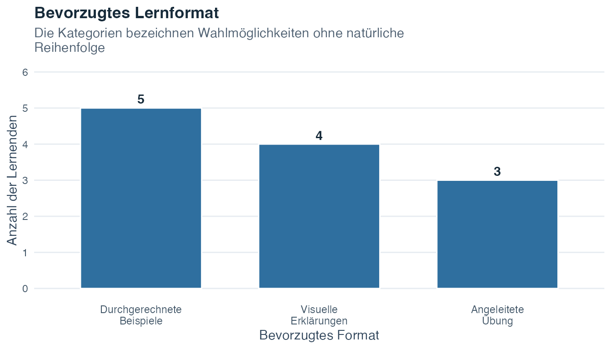
Lies das Säulendiagramm von der vertikalen Basislinie aus. Die Säule der durchgerechneten Beispiele reicht bis 5, jene der visuellen Erklärungen bis 4 und jene der angeleiteten Übung bis 3. Die horizontalen Positionen trennen die Kategorien, ohne ein Lernformat als grundsätzlich höher darzustellen.
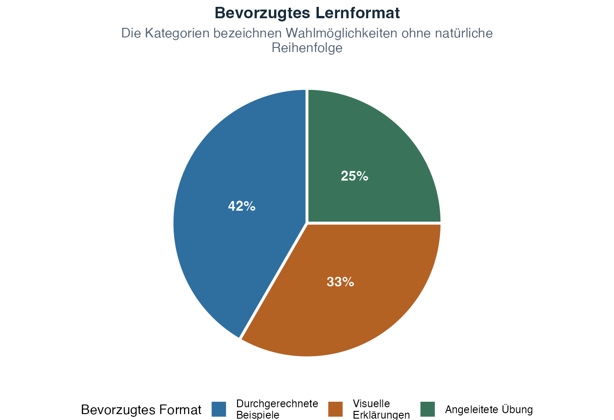
Die Sektoren ergeben zusammen 100 % und betonen dadurch die Zusammensetzung. Vergleiche sie mit den Säulen. Die grösste und die kleinste Kategorie sind weiterhin gut erkennbar, während sich der Unterschied zwischen 4 und 3 anhand der Säulenlängen leichter beurteilen lässt. Beide Diagramme sind zulässig. Für genaue Vergleiche ist das Säulendiagramm meistens geeigneter.
Eine ordinalskalierte Variable besitzt Kategorien mit einer sinnvollen Reihenfolge. Die Abstände zwischen benachbarten Kategorien müssen jedoch nicht gleich gross sein.
Beispiele:
Eine Ordinalskala zeigt, wer mehr oder weniger von einer Eigenschaft aufweist. Im schweizerischen Notensystem ist eine 6 besser als eine 4. In Deutschland ist die Richtung umgekehrt, und die 1 ist die beste Note. Die Kategorie «schwer» bezeichnet eine stärkere Belastung als «leicht». Die Abstände zwischen benachbarten Kategorien bleiben unbekannt. Ein Schritt um eine Notenstufe muss nicht an jedem Punkt der Skala dieselbe Leistungsdifferenz darstellen.
Unser gemeinsames Beispiel verwendet die Frage «Wie sicher fühlst du dich vor dem Workshop?» Die Antworten reichen von 1, sehr unsicher, bis 5, sehr sicher. Eine Bewertung von 4 drückt mehr Sicherheit aus als eine Bewertung von 2. Die Skala sagt jedoch nicht, dass der gedankliche Schritt von 1 zu 2 genau gleich gross ist wie jener von 4 zu 5.
| Sicherheitseinschätzung | Lernende | Prozent | Kumulierte Prozent |
|---|---|---|---|
| 1 | 1 | 8.3% | 8.3% |
| 2 | 2 | 16.7% | 25.0% |
| 3 | 4 | 33.3% | 58.3% |
| 4 | 3 | 25.0% | 83.3% |
| 5 | 2 | 16.7% | 100.0% |
Lies die kumulierte Spalte von der niedrigsten zur höchsten Kategorie. Sie beantwortet Fragen wie «Welcher Anteil wählte 3 oder weniger?» Hier lautet die Antwort 58.3 %. Diese laufende Summe ist sinnvoll, weil die Kategorien eine begründbare Reihenfolge besitzen.
Jede streng monoton steigende Umcodierung ist zulässig, weil sie die Reihenfolge bewahrt. Die Codierung von niedrig, mittel und hoch als 1, 2 und 3 oder als 10, 20 und 100 erhält die Rangfolge, obwohl sich die numerischen Abstände ändern. Eine Umcodierung, die Kategorien umkehrt oder zusammenbindet, bewahrt die ursprüngliche ordinale Bedeutung nicht.
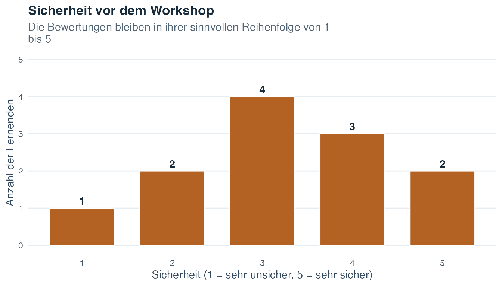
Gehe von links nach rechts, während die Sicherheit zunimmt. Die Säulenhöhen geben die Häufigkeiten an, und der Gipfel bei Bewertung 3 zeigt den Modalwert. Durch die geordneten Positionen lässt sich auch die Mediankategorie leichter verstehen. Ein Kreisdiagramm würde die Anteile ebenfalls bewahren, die Reihenfolge und das kumulierte Muster jedoch weniger deutlich zeigen.
Eine intervallskalierte Variable besitzt gleiche Abstände zwischen allen Werten. Unterschiede sind deshalb numerisch sinnvoll. Es fehlt ihr jedoch ein natürlicher Nullpunkt. Der Wert null ist durch Konvention festgelegt und bedeutet nicht, dass die gemessene Eigenschaft vollständig fehlt.
Das anschaulichste Beispiel ist die Temperatur in Grad Celsius oder Fahrenheit. Der Abstand zwischen 10 °C und 20 °C ist genauso gross wie der Abstand zwischen 20 °C und 30 °C. 0 °C bedeutet aber nicht, dass keine Temperatur vorhanden ist. Der Wert bezeichnet lediglich den Gefrierpunkt von Wasser als festgelegte Referenz. Ohne natürlichen Nullpunkt sind Verhältnisaussagen sinnlos: 40 °C ist nicht «doppelt so warm» wie 20 °C.
Viele aus mehreren Items gebildete Messwerte in den Sozialwissenschaften, darunter psychologische und pädagogische Skalen, werden näherungsweise als intervallskaliert analysiert. Gleiche Abstände sind eine arbeitspraktische Messannahme, die durch Konstruktion und Validierung des Instruments gestützt werden muss. Aufgedruckte Zahlen allein können sie nicht belegen. Ein Wert von 0 kann lediglich das untere Ende eines Instruments bezeichnen und muss nicht das vollständige Fehlen des zugrunde liegenden Merkmals bedeuten.
Eine positive Verschiebungs- und Skalierungsregel der Form \(y = a + b x\) mit \(b > 0\) ist zulässig. Die feste Zahl \(a\) verschiebt den Nullpunkt, während der positive Multiplikator \(b\) die Einheit verändert. Gleiche Differenzen bleiben dabei erhalten. Die Umrechnung von Celsius in Fahrenheit ist das übliche Beispiel.
Die Raumtemperaturen im Workshop bilden ein kleines Beispiel für eine Intervallskala. Jeder Unterschied von 1 °C hat dieselbe Bedeutung. Die Werte können nach Fahrenheit verschoben und skaliert werden, ohne dass sich eine in den Daten dargestellte Temperaturdifferenz verändert.
| Lernende Person | Raumtemperatur (°C) |
|---|---|
| 1 | 18 |
| 2 | 19 |
| 3 | 19 |
| 4 | 20 |
| 5 | 20 |
| 6 | 20 |
| 7 | 21 |
| 8 | 21 |
| 9 | 21 |
| 10 | 21 |
| 11 | 22 |
| 12 | 23 |
Frage dich, was die gleichen Abstände erlauben. Wir können die Temperaturen addieren und einen Mittelwert berechnen. Wir können Abweichungen in Grad beschreiben und ihre Grösse vergleichen. Ausserdem können wir die Werte ordnen und rangbasierte Kennwerte verwenden. Der konventionelle Nullpunkt verhindert weiterhin die Aussage, 20 °C seien doppelt so warm wie 10 °C.
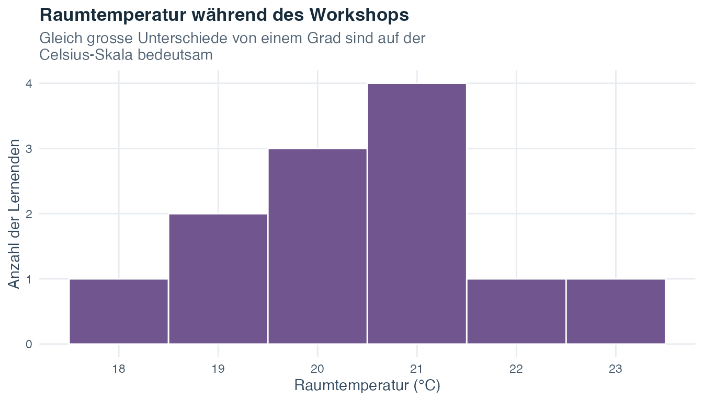
Jede Säule umfasst dasselbe Ein-Grad-Intervall. Dadurch lassen sich die Säulenhöhen vergleichen. Die Konzentration um 20 °C und 21 °C wird sichtbar, während die Endpunkte zeigen, dass die beobachteten Werte von 18 °C bis 23 °C reichen.
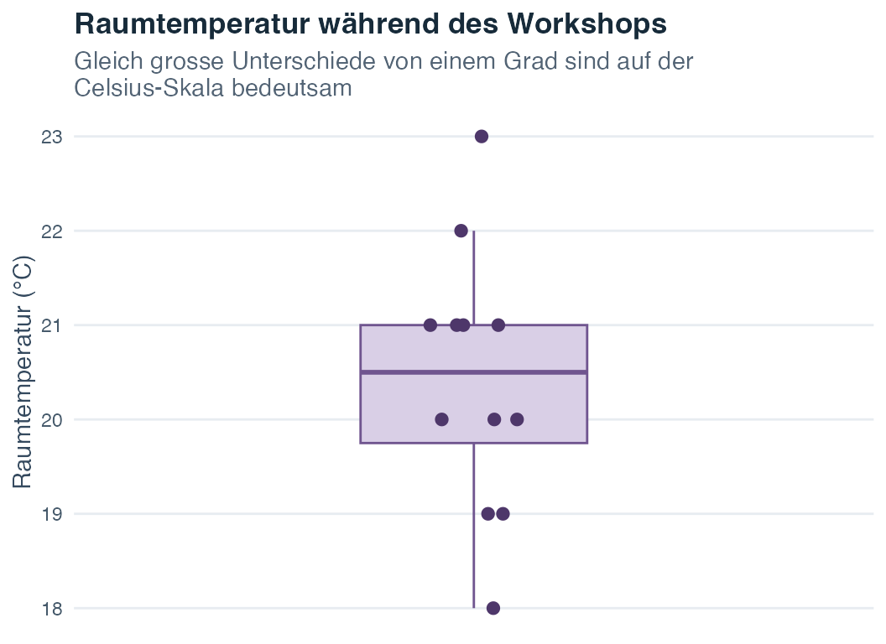
Der Boxplot bietet einen schnellen Blick auf Lage und Streuung. Die eingezeichneten Punkte erinnern gleichzeitig daran, wie viele Einzelheiten der Kennwert verdichtet. Beide Darstellungen gemeinsam sind informativer, als von einer einzigen alle Antworten zu erwarten.
Eine verhältnisskalierte Variable besitzt wie eine intervallskalierte Variable gleiche Abstände. Zusätzlich hat sie einen natürlichen Nullpunkt, bei dem null tatsächlich das vollständige Fehlen der gemessenen Grösse ausdrückt. Dadurch werden Verhältnisaussagen sinnvoll.
Beispiele:
Der praktische Unterschied zur Intervallskala besteht darin, dass nun Aussagen wie «Die mittlere Reaktionszeit von Gruppe A ist 1.5-mal so hoch wie jene von Gruppe B» sinnvoll sind.
Positive multiplikative Transformationen der Form \(y = b x\) mit \(b > 0\) sind zulässig. Sie verändern die Einheit, lassen den Nullpunkt unverändert und bewahren Verhältnisse, wie bei der Umrechnung von Zentimetern in Meter.
Im Workshop-Beispiel wird die freiwillige Lernzeit in Minuten gemessen. Ein Wert von 0 bedeutet, dass keine Lernzeit erfasst wurde, und 60 Minuten sind doppelt so viel Zeit wie 30 Minuten. Die Umrechnung von Minuten in Stunden verändert die Einheit und bewahrt dabei null sowie jedes Verhältnis.
| Lernende Person | Lernzeit (Minuten) |
|---|---|
| 1 | 0 |
| 2 | 15 |
| 3 | 20 |
| 4 | 25 |
| 5 | 30 |
| 6 | 35 |
| 7 | 40 |
| 8 | 45 |
| 9 | 50 |
| 10 | 60 |
| 11 | 75 |
| 12 | 90 |
Lies vor der Berechnung die Endpunkte. Das beobachtete Minimum von 0 Minuten besitzt eine direkte Bedeutung, und das Maximum beträgt 90 Minuten. Vergleiche danach die Mitte der Verteilung mit ihrer längeren oberen Seite. Diese erste Prüfung hilft zu entscheiden, ob Mittelwert mit Standardabweichung, Median mit IQR oder beide Paare die klarste Beschreibung liefern.
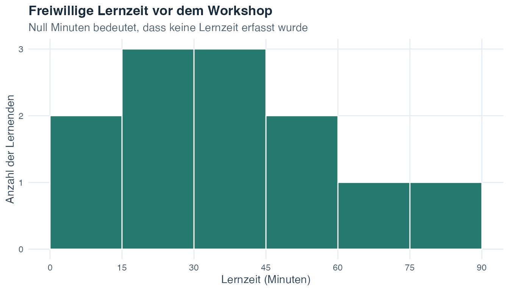
Die Säulen zeigen, wie sich die Lernzeiten über den Bereich von 0 bis 90 Minuten verteilen. Die meisten Beobachtungen liegen unter den längsten Zeiten, sodass sich das obere Ende weiter als die Hauptkonzentration erstreckt. Die Tabelle zeigt die Einzelwerte, während das Histogramm das Gesamtmuster leichter erkennbar macht.
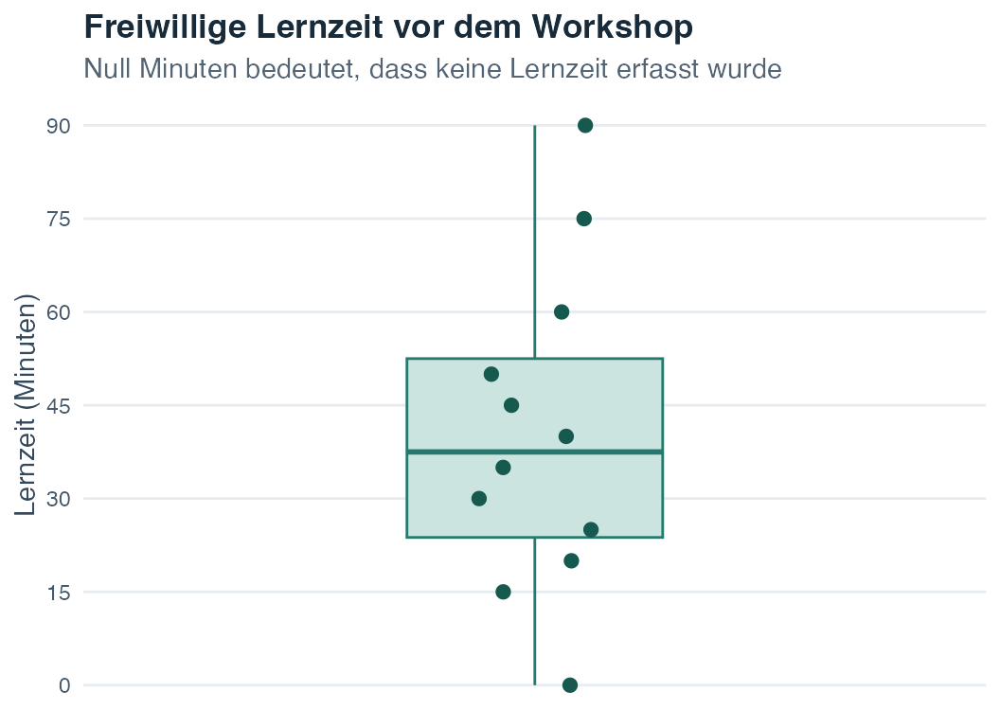
Die Medianlinie und die Box fassen die geordnete Mitte der Daten zusammen. Die einzelnen Punkte zeigen, woher diese Zusammenfassung stammt. Dazu gehören die lernende Person mit 0 erfassten Minuten und die längeren Lernzeiten am oberen Ende.
Eine absolutskalierte Variable erlaubt hinsichtlich zulässiger Transformationen die stärksten Einschränkungen. Wie eine verhältnisskalierte Variable besitzt sie einen natürlichen Nullpunkt und gleiche Abstände. Zusätzlich hat sie eine natürliche, feste Einheit, die nicht verändert werden kann.
Absolutskalierte Variablen sind typischerweise ganzzahlige Anzahlen unteilbarer Objekte. Solche Werte heissen diskret, weil zwischen getrennten möglichen Werten wie 2 und 3 keine weitere zulässige Anzahl liegt:
Eine Person kann nicht 1.5 Geschwister haben, und «5 Geschwister» lassen sich nicht in eine andere Einheit umrechnen. Die Art der Zählung bestimmt die Einheit eins. Nur die Identitätstransformation \(y = x\) ist zulässig. In der Praxis werden absolutskalierte Variablen mit denselben Kennwerten wie verhältnisskalierte Variablen beschrieben.
Die letzte Workshop-Variable zählt, wie viele Übungsfragen jede lernende Person bearbeitet hat. Jeder Schritt um eins bedeutet eine weitere bearbeitete Frage. Null bedeutet keine, und die Einheit kann nicht durch Minuten, Kilogramm oder eine andere frei wählbare Masseinheit ersetzt werden.
| Bearbeitete Fragen | Lernende | Prozent |
|---|---|---|
| 0 | 1 | 8.3% |
| 1 | 2 | 16.7% |
| 2 | 3 | 25.0% |
| 3 | 2 | 16.7% |
| 4 | 2 | 16.7% |
| 5 | 1 | 8.3% |
| 6 | 0 | 0.0% |
| 7 | 1 | 8.3% |
Die Tabelle hält die diskreten Schritte sichtbar. Zwei bearbeitete Fragen sind der häufigste Wert. Die Anzahl 6 kommt nicht vor, und das Maximum von 7 gehört zu einer lernenden Person. Diese Einzelheiten würden verschwinden, wenn nur ein Durchschnitt berichtet würde.
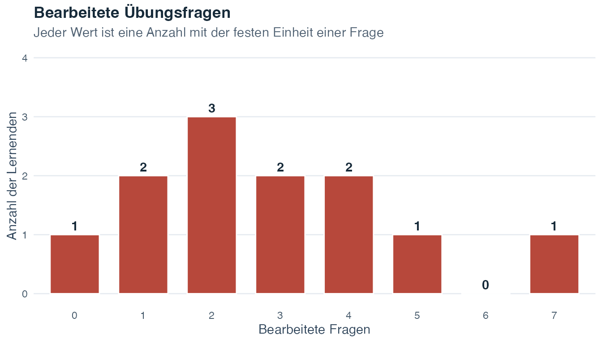
Jede horizontale Position bezeichnet eine mögliche ganzzahlige Anzahl. Die fehlende Säule bei 6 ist inhaltlich bedeutsam, weil niemand genau sechs Fragen bearbeitet hat. Die getrennten Säulen bewahren die diskrete Natur der Variable.
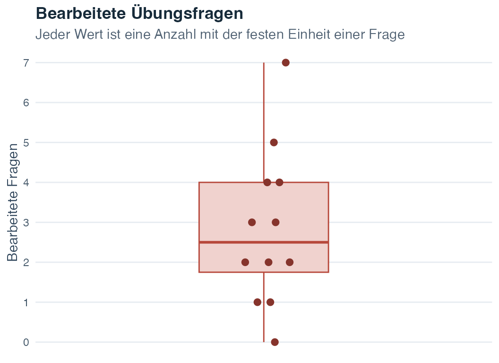
Der Boxplot erleichtert den Vergleich von Lage und Streuung mit einer anderen Gruppe. Die Punkte halten gleichzeitig die ursprünglichen Anzahlen sichtbar. Diese Kombination ist besonders hilfreich in einem kleinen Beispiel, in dem jede Beobachtung gezeigt werden kann.
| Skala | Geordnet | Gleiche Abstände | Natürlicher Nullpunkt | Feste Einheit | Beispiel |
|---|---|---|---|---|---|
| Nominal | Nein | Nein | Nein | Nein | Therapieart |
| Ordinal | Ja | Nein | Nein | Nein | Schulnote (1–6) |
| Intervall | Ja | Ja | Nein | Nein | Temperatur (°C) |
| Verhältnis | Ja | Ja | Ja | Nein | Körpergewicht (kg) |
| Absolut | Ja | Ja | Ja | Ja | Anzahl Geschwister |
Jedes Skalenniveau umfasst alle Eigenschaften der darüberstehenden Niveaus. Weiter unten in der Tabelle werden daher mehr statistische Operationen zulässig. Das Skalenniveau einer Variable vor jeder Berechnung zu bestimmen, gehört zu den grundlegenden Gewohnheiten einer sorgfältigen Datenanalyse.
| Skala | Zulässige Transformation | Zu bewahrende Eigenschaft |
|---|---|---|
| Nominal | Eineindeutige Umbenennung | Gleichheit und Ungleichheit der Kategorien |
| Ordinal | Jede streng monoton steigende Umcodierung | Rangfolge |
| Intervall | \(y = a + b x\), wobei \(b > 0\) | Gleichheit von Differenzen |
| Verhältnis | \(y = b x\), wobei \(b > 0\) | Verhältnisse und natürlicher Nullpunkt |
| Absolut | \(y = x\) | Fester Nullpunkt und natürliche Einheit |
Die erste Tabelle ist eine Checkliste der Messeigenschaften. Die zweite übersetzt diese Eigenschaften in eine praktische Prüfung: Wenn eine zulässige Umcodierung die Bedeutung einer geplanten Berechnung verändert, ist diese Berechnung nicht allein durch das Skalenniveau gerechtfertigt. Ordinale Codes 1, 2 und 3 dürfen zum Beispiel durch 10, 20 und 100 ersetzt werden, weil ihre Reihenfolge gleich bleibt. Ihr numerischer Mittelwert verändert sich dabei stark. Das zeigt, weshalb ein Mittelwert für ordinale Daten eine zusätzliche Annahme gleicher Abstände benötigt.
Die drei im nächsten Abschnitt eingeführten Lagemasse werden auf unterschiedlichen Stufen dieser Hierarchie sinnvoll:
| Lagemass | Niedrigstes Skalenniveau, das den Kennwert erlaubt | Verwendete Information |
|---|---|---|
| Modalwert | Nominal | Welcher Wert oder welche Kategorie am häufigsten vorkommt |
| Median | Ordinal | Reihenfolge der Beobachtungen |
| Mittelwert | Intervall | Gleiche numerische Abstände zwischen Werten |
Lies diese Tabelle von oben nach unten als Erweiterung. Metrische Variablen sind ebenfalls geordnet und können deshalb auch einen Median und einen Modalwert haben. Eine ordinale Variable kann neben dem Median auch einen Modalwert haben. Beim Abstieg durch die Messhierarchie werden zusätzliche Kennwerte vertretbar, während die früheren erhalten bleiben.
Jede statistische Entscheidung beginnt beim Skalenniveau. Nominaldaten erlauben Häufigkeiten, Anteile und den Modalwert. Ordinaldaten erlauben zusätzlich ordnungsbasierte Kennwerte wie Median und Perzentile. Metrische Daten erlauben Mittelwerte, Standardabweichungen, Korrelationen und weitere Verfahren. Eine Operation ist nur dann sinnvoll, wenn ihr Ergebnis unter jeder zulässigen Umcodierung des Skalenniveaus erhalten bleibt.
Sobald das Skalenniveau bekannt ist, werden die beobachteten Werte geordnet, ohne ihr Muster zu verbergen. Eine Häufigkeitsverteilung ordnet sie Kategorien oder numerischen Intervallen zu und hält fest, wie oft jeder Wert auftritt. Sie ist häufig die erste Zusammenfassung einer Variable, weil sie fehlende Kategorien, unzulässige Codes, schwach besetzte Gruppen und Häufungen sichtbar macht, die ein einzelnes Lagemass verdecken würde.
Für Kategorie oder Intervall \(j\) bezeichnet \(n_j\) die absolute Häufigkeit und \(n\) die Gesamtzahl der Beobachtungen. Die relative Häufigkeit lautet:
\[f_j = \frac{n_j}{n}\]
Relative Häufigkeiten können als Anteile angegeben oder für Prozentwerte mit 100 multipliziert werden. Für Kategorien mit einer sinnvollen Reihenfolge ist die kumulative relative Häufigkeit bis einschliesslich Kategorie \(j\):
\[F_j = \sum_{k=1}^{j} f_k\]
| Häufigkeitsart | Bedeutung | Geeignete Variablen |
|---|---|---|
| Absolute Häufigkeit \(n_j\) | Anzahl Beobachtungen in Kategorie \(j\) | Jedes Skalenniveau |
| Relative Häufigkeit \(f_j\) | Anteil oder Prozentsatz in Kategorie \(j\) | Jedes Skalenniveau |
| Kumulative relative Häufigkeit \(F_j\) | Anteil bis einschliesslich Kategorie \(j\) | Ordinale oder metrische Variablen |
Absolute Häufigkeiten müssen sich zu \(n\) und relative Häufigkeiten, abgesehen von kleinen Rundungsabweichungen, zu 1 summieren. Kumulative relative Häufigkeiten sind für nominale Kategorien nicht sinnvoll, weil eine Summe «bis» zu einer Kategorie eine Reihenfolge voraussetzt, die das Skalenniveau nicht besitzt.
Die fiktiven Zufriedenheitsbewertungen bieten ein kleines Rechenbeispiel. Die Spalte mit den absoluten Häufigkeiten zeigt, wie viele Studierende jede geordnete Kategorie gewählt haben. Wird jede Häufigkeit durch 160 geteilt, entsteht die relative Häufigkeit. Durch fortlaufendes Addieren der relativen Häufigkeiten ab Bewertung 1 entsteht der kumulative Anteil.
| Zufriedenheitswert | Häufigkeit | Relative Häufigkeit | Kumulativer Anteil |
|---|---|---|---|
| 1 | 0 | 0.000 | 0.000 |
| 2 | 1 | 0.006 | 0.006 |
| 3 | 27 | 0.169 | 0.175 |
| 4 | 80 | 0.500 | 0.675 |
| 5 | 52 | 0.325 | 1.000 |
Lies die letzte Spalte von oben nach unten. Beim Wert 4 erreicht sie 0.675. Damit wählten 67.5% der Studierenden in diesem fiktiven Datensatz eine Bewertung von höchstens 4. Die letzte Zeile erreicht 1.000, weil sie alle Beobachtungen umfasst. Der Wert wird aus denselben Häufigkeiten berechnet, die in der Tabelle stehen. Dadurch bleibt die schriftliche Interpretation auch dann passend, wenn die Lehrdaten später bewusst neu erzeugt werden.
Eine Häufigkeitstabelle bewahrt mehr Einzelheiten als ein einzelner Durchschnittswert. Prüfe Summen, Kategorien mit einer Häufigkeit von null, Reihenfolge und Bezugsgrössen, bevor du zu einer Grafik oder numerischen Zusammenfassung übergehst.
Nach der Bestimmung des Skalenniveaus stellt sich eine naheliegende Frage: Wo liegen diese Beobachtungen im Allgemeinen? Eine Liste von zwölf oder zwölftausend Werten lässt sich kaum im Kopf behalten. Ein Lagemass verdichtet diese Liste zu einem Bezugspunkt. Dadurch können wir eine Gruppe beschreiben, Gruppen vergleichen und Beobachtungen erkennen, die weit von der Hauptkonzentration entfernt liegen.
Das Wort typisch verlangt Sorgfalt. Es bedeutet nicht, dass jede Person den berichteten Wert besitzt, und die numerische Mitte muss nicht einmal ein beobachteter Wert sein. Gemeint ist eine begründbare Darstellung der Lage einer Verteilung. Mittelwert, Median und Modalwert bestimmen diese Lage auf unterschiedliche Weise. Die beste Wahl hängt vom Skalenniveau, von der Verteilungsform und von der inhaltlichen Frage ab.
Stell dir die Frage vor, wo eine Klasse bei der Lernzeit typischerweise liegt. Der Mittelwert gleicht alle erfassten Minuten aus, der Median verortet die mittlere Person in der geordneten Klasse und der Modalwert bezeichnet die häufigste genaue Dauer. Diese Antworten können sich unterscheiden, ohne dass eine Berechnung falsch ist. Sie beantworten verschiedene Varianten der Frage «Was ist typisch?»
Der Mittelwert ist das arithmetische Mittel. Dazu werden alle Werte summiert und durch die Anzahl Beobachtungen geteilt:
\[\bar{x} = \frac{1}{n} \sum_{i=1}^{n} x_i\]
Dabei ist \(n\) die Stichprobengrösse, \(x_i\) der Wert der \(i\)-ten Beobachtung, und die Summe läuft von \(i = 1\) bis \(i = n\).
Die Abweichungen vom Mittelwert summieren sich immer zu null:
\[\sum_{i=1}^{n}(x_i - \bar{x}) = 0\]
Positive Abweichungen oberhalb des Mittelwerts gleichen negative Abweichungen unterhalb des Mittelwerts genau aus. Diese Identität erklärt, weshalb rohe Abweichungen nicht zur Messung der Variabilität gemittelt werden können und später quadrierte Abweichungen verwendet werden.
Diese Ausgleichseigenschaft zeigt den hauptsächlichen Zweck des Mittelwerts. Er liefert einen Bezugspunkt, der jeden Wert verwendet und spätere Berechnungen auf der Grundlage von Abweichungen ermöglicht. Dazu gehören Varianz, Regression und viele inferenzstatistische Verfahren. Bei einer metrischen Verteilung mit einer annähernd symmetrischen Hauptkonzentration beschreibt der Mittelwert die Lage oft besonders effizient.
Ein konkretes Beispiel: Fünf Studierende geben Körpergewichte von 65, 70, 58, 72 und 80 Kilogramm an. Der Mittelwert beträgt:
\[\bar{x} = \frac{65 + 70 + 58 + 72 + 80}{5} = \frac{345}{5} = 69 \text{ kg}\]
Der Mittelwert berücksichtigt jeden Wert im Datensatz. Bei annähernd symmetrischen Verteilungen ist er deshalb sehr informativ. Diese Empfindlichkeit gegenüber allen Werten ist zugleich seine Schwäche: Eine einzige extreme Beobachtung kann ihn deutlich verschieben. Wiegt die schwerste Person statt 80 kg nun 140 kg, ergibt sich:
\[\bar{x} = \frac{65 + 70 + 58 + 72 + 140}{5} = \frac{405}{5} = 81 \text{ kg}\]
Der neue Mittelwert von 81 kg beschreibt die typische Person möglicherweise nicht mehr angemessen, weil eine ungewöhnliche Beobachtung ihn nach oben zieht.
Verwende den Mittelwert, wenn numerische Differenzen bedeutsam sind und das arithmetische Zentrum die Forschungsfrage beantwortet. Untersuche zuvor immer die Verteilung. Ein extremer Wert kann ein Datenfehler, ein seltener gültiger Fall oder ein wichtiger Teil der Grundgesamtheit sein. Kläre diese Möglichkeiten, bevor du über den Umgang mit ihm entscheidest.
Der Median ist ein Wert, der die geordneten Beobachtungen so teilt, dass mindestens die Hälfte auf oder unter ihm und mindestens die Hälfte auf oder über ihm liegt. Diese Formulierung bleibt auch bei gebundenen Werten korrekt.
Der Median verortet die Mitte anhand der Position. Weil er vor allem auf der Reihenfolge beruht, bleibt er für ordinale Daten und für metrische Verteilungen informativ, deren Ränder oder ungewöhnliche Werte den Mittelwert von der Hauptgruppe wegziehen. Fragen nach einem typischen Einkommen, einer Wartezeit oder einer Reaktionszeit profitieren häufig von dieser rangbasierten Sicht.
Bei einer ungeraden Anzahl Beobachtungen ist der Median der einzelne mittlere Wert der geordneten Liste. Bei einer geraden Anzahl metrischer Beobachtungen gibt Software üblicherweise das arithmetische Mittel der beiden zentralen Werte aus. Bei einer rein ordinalen Variable kann dieser Durchschnitt eine Zahl oder Kategorie erzeugen, die auf der Skala nicht definiert ist. Berichte in diesem Fall die zentralen geordneten Kategorien oder verwende eine dokumentierte Konvention, ohne einen metrischen Abstand zwischen ihnen vorzutäuschen.
Für die fünf geordneten Körpergewichte 58, 65, 70, 72 und 80 ist der Median der dritte Wert: 70 kg.
Mit dem Ausreisser lautet die Reihe 58, 65, 70, 72 und 140. Der Median bleibt der dritte Wert: 70 kg. In diesem Beispiel verändert die extreme Beobachtung ihn nicht. Das veranschaulicht die zentrale Eigenschaft des Medians: Er ist robust gegenüber Ausreissern, sodass eine kleine Zahl extremer Werte ihn gewöhnlich nur begrenzt beeinflusst.
Diese Robustheit ist in der Verhaltens- und Sozialforschung wichtig. Reaktionszeiten bei geteilter Aufmerksamkeit sind häufig rechtsschief. Die meisten Personen reagieren innerhalb von 350 bis 600 Millisekunden, einzelne benötigen jedoch 1,500 Millisekunden oder mehr. In dieser Situation beschreibt der Median die typische Leistung der Hauptgruppe oft klarer als der Mittelwert, der sich in Richtung der langsamsten Reaktionen verschiebt.
Der Modalwert ist der am häufigsten auftretende Wert oder die häufigste Kategorie. Anders als Mittelwert und Median lässt er sich für jedes Skalenniveau bestimmen, auch für Nominalvariablen. Soll die häufigste Therapieform einer Klinik benannt werden, ist der Modalwert der geeignete Kennwert.
Der Modalwert erfüllt einen direkten praktischen Zweck. Er zeigt, welche Antwort, Kategorie oder welcher exakte Wert am häufigsten vorkommt. Dadurch ist er das einzige Lagemass für eine rein nominalskalierte Variable. Er ist auch hilfreich, wenn die häufigste Wahl selbst inhaltlich wichtig ist, etwa die am stärksten nachgefragte Sprache für ein Angebot oder die häufigste Zahl besuchter Sitzungen.
Was geschieht aber, wenn zwei Werte gleich häufig vorkommen und beide die höchste Häufigkeit besitzen? Betrachte 1, 2, 2, 3, 3 und 4. Die Werte 2 und 3 treten je zweimal auf. Beide sind Modalwerte, und die Daten sind bimodal. Teilen mehr als zwei Werte die höchste Häufigkeit, besitzt der Datensatz mehrere Modalwerte und kann als multimodal bezeichnet werden. Treten alle Werte gleich häufig auf, gibt es keinen eindeutigen Modalwert.
Bei ungruppierten numerischen Daten bezieht sich der Modalwert auf exakt wiederholte Werte. Ein Gipfel im Histogramm ist damit verwandt, hängt jedoch von den gewählten Klassen ab. Er darf deshalb nicht automatisch als exakter Modalwert der Stichprobe behandelt werden. Frage dich, ob du den häufigsten beobachteten Wert oder eine durch die Gruppierung benachbarter Werte entstandene Konzentration bestimmst.
Bei quantitativen Daten ist der Modalwert besonders nützlich, wenn:
Ein merklicher Unterschied zwischen Mittelwert und Median kann auf Schiefe hindeuten, doch ihre Reihenfolge allein belegt keine bestimmte Verteilungsform. Zeigt ein Histogramm zusätzlich einen langen rechten Randbereich, ist ein Mittelwert über dem Median damit vereinbar, dass hohe Werte den Mittelwert nach oben ziehen, während der Median stabiler bleibt. In dieser Situation kann der Median den typischen Wert besser erfassen.
Mittelwert, Median und Modalwert definieren «typisch» auf unterschiedliche Weise. Der Mittelwert ist bei annähernd symmetrischen metrischen Daten häufig informativ. Median und IQR sind oft informativer, wenn Schiefe oder ungewöhnliche Werte den Mittelwert und die Standardabweichung von der Hauptkonzentration wegziehen würden. Der Modalwert eignet sich für Nominaldaten oder wenn der häufigste Wert inhaltlich wichtig ist. Mehr als ein Kennwert kann nützlich sein. Transparente Forschung nennt die verwendeten Kennwerte und erklärt die Gründe für ihre Wahl.
Nach der Bestimmung der Lage müssen wir fragen, wie eng sich die Beobachtungen darum gruppieren. Variabilität beschreibt, wie stark sich Werte innerhalb eines Datensatzes unterscheiden. Sie zeigt, ob ein einzelnes Zentrum eine ziemlich ähnliche Gruppe angemessen darstellt oder eine grosse Bandbreite an Erfahrungen in einer allzu einfachen Zahl verdichtet.
Stell dir zwei Klassen mit demselben mittleren Testwert von 70 vor. In einer Klasse erreichen fast alle Personen Werte zwischen 68 und 72. In der anderen reichen die Werte von 35 bis 100. Der gemeinsame Mittelwert verdeckt einen wesentlichen Unterschied. Die erste Klasse ist eng gebündelt, während die zweite viel stärker variiert. Das kann unser Verständnis von Bildungsbedürfnissen, Ungleichheit, Messqualität oder möglichen Teilgruppen verändern.
Variabilität erfüllt deshalb mehrere Zwecke. Sie zeigt, wie repräsentativ ein Zentrum ist, macht Unterschiede zwischen Personen oder Fällen sichtbar, hilft bei der Erkennung ungewöhnlicher oder unplausibler Beobachtungen und bereitet spätere Fragen zur Unsicherheit vor. Kein einzelnes Streuungsmass erfasst jeden Aspekt. Die Spannweite verwendet die beiden Endpunkte, der IQR konzentriert sich auf die mittlere Hälfte und Varianz mit Standardabweichung beschreibt Abweichungen vom Mittelwert.
Die Spannweite ist das direkteste Streuungsmass:
\[\text{Spannweite} = x_{\max} - x_{\min}\]
Sie zeigt den Abstand zwischen den beiden extremsten beobachteten Werten. Ihr hauptsächlicher Zweck ist eine schnelle Prüfung des gesamten Bereichs. Reichen erfasste Alterswerte von 18 bis 240 Jahren, weisen die Endpunkte sofort auf einen Wert hin, der untersucht werden muss. Die Spannweite lässt sich ausserdem leicht vermitteln, wenn die vollständige Ausdehnung wichtig ist.
Dieses Mass hängt vollständig von Minimum und Maximum ab. Eine einzelne ungewöhnlich hohe oder niedrige Beobachtung kann die Spannweite stark vergrössern, obwohl alle anderen Werte unverändert bleiben. Verwende sie deshalb als Teil einer umfassenderen Beschreibung und nicht als alleinige Interpretation der Variabilität.
Quantile zeigen, wo Beobachtungen im geordneten Datensatz liegen. Ein \(p\)-Quantil ist ein Schwellenwert, bei oder unter dem ein festgelegter Anteil der geordneten Beobachtungen liegt. Perzentile drücken \(p\) auf einer Skala von 0 bis 100 aus.
Quantile erfüllen einen anderen Zweck als ein Durchschnitt. Sie bezeichnen relative Positionen. Ein Wert am 90. Perzentil liegt auf oder über den meisten Beobachtungen der gewählten Bezugsgruppe, auch wenn die Verteilung schief ist. Quantile definieren ausserdem nützliche Schwellen zur Beschreibung des unteren, mittleren und oberen Bereichs, ohne gleiche Abstände zwischen Kategorien vorauszusetzen.
Drei Perzentile sind in der deskriptiven Statistik besonders wichtig:
Zusammen beschreiben die drei Quartile vier aufeinanderfolgende Viertel der geordneten Daten. In einer endlichen Stichprobe führen gebundene Werte und Interpolation dazu, dass diese Viertel nicht immer vier Gruppen mit exakt derselben Beobachtungszahl bilden. Statistiksoftware verwendet zudem mehrere vertretbare Konventionen für Stichprobenquantile, weshalb sich berichtete Quartile geringfügig unterscheiden können. Gib die Konvention an, wenn genaue Quartilswerte eine Schlussfolgerung wesentlich beeinflussen.
Der Interquartilsabstand (IQR) misst die Streuung zwischen dem ersten und dem dritten Quartil:
\[\text{IQR} = Q_3 - Q_1\]
Der IQR beantwortet eine besonders nützliche Frage: Über welchen Bereich erstreckt sich die mittlere Hälfte des Datensatzes, und wie breit ist dieser Bereich? Dieser Teil der Verteilung beschreibt häufig die gewöhnliche Variation. Der IQR passt natürlich zum Median, weil beide auf geordneten Positionen beruhen und gegenüber wenigen extremen Beobachtungen vergleichsweise robust sind.
Weil der IQR von zwei zentralen Quantilen und nicht von den Endpunkten abhängt, hat eine kleine Zahl extremer Beobachtungen gewöhnlich nur begrenzten Einfluss auf ihn. Stichprobenquartile können sich dennoch verändern. Robustheit ist daher graduell. Bei ordinalen Kategorien sind die Quartilskategorien selbst sinnvoll. Die Interpretation ihrer numerischen Differenz als IQR setzt zusätzlich bedeutsame Abstände voraus.
Der IQR bestimmt auch die Reichweite der Whisker im Boxplot. Die untere und obere Grenze lauten:
\[\text{Untere Grenze} = Q_1 - 1.5 \cdot \text{IQR}\] \[\text{Obere Grenze} = Q_3 + 1.5 \cdot \text{IQR}\]
Der untere Whisker reicht bis zum kleinsten beobachteten Wert auf oder oberhalb der unteren Grenze. Der obere Whisker reicht bis zum grössten beobachteten Wert auf oder unterhalb der oberen Grenze. Beobachtungen ausserhalb dieser Grenzen werden einzeln als Punkte dargestellt und gelten als mögliche Ausreisser. Solche Werte sind nicht automatisch Fehler. Sie sind im Verhältnis zur restlichen Gruppe ungewöhnlich und sollten genauer geprüft werden.
Die korrigierte Stichprobenvarianz summiert die quadrierten Abweichungen vom Stichprobenmittelwert und teilt ihre Summe durch \(n - 1\) Freiheitsgrade:
\[s^2 = \frac{1}{n - 1} \sum_{i=1}^{n} (x_i - \bar{x})^2\]
Warum werden die Abweichungen quadriert? Würden die Ausdrücke \((x_i - \bar{x})\) ohne Quadrieren summiert, höben sich positive und negative Abweichungen auf. Ihre Summe wäre unabhängig von der Streuung immer null. Das Quadrieren verhindert diese Aufhebung und lässt grössere Abweichungen stärker in die Summe eingehen.
Die Varianz erfüllt einen zentralen mathematischen Zweck. Sie macht alle Abweichungen nichtnegativ und verbindet sie zu einem Mass der Streuung um den Mittelwert. Quadrierte Abweichungen besitzen zudem günstige mathematische Eigenschaften in Wahrscheinlichkeitsmodellen, Standardfehlern, Regression, ANOVA und vielen späteren Verfahren. Die quadrierte Einheit erschwert die direkte Interpretation. Deshalb übersetzen wir die Varianz mithilfe der Standardabweichung zurück in die ursprüngliche Einheit.
Warum wird \(n - 1\) verwendet? Nach der Berechnung des Stichprobenmittelwerts müssen sich die Abweichungen zu null summieren. Sind die ersten \(n - 1\) Abweichungen bekannt, ist die letzte festgelegt. Die korrigierte Stichprobenvarianz berücksichtigt diesen verlorenen Freiheitsgrad mit \(n - 1\). Thema 3 entwickelt die Begründung anhand wiederholter Stichproben. Verwende die Formel an dieser Stelle konsequent und halte den Unterschied zwischen Stichprobe und vollständiger Grundgesamtheit sichtbar.
Stellen die beobachteten Werte die gesamte interessierende Grundgesamtheit und nicht eine zur Schätzung verwendete Stichprobe dar, lautet die Populationsvarianz:
\[\sigma^2 = \frac{1}{N}\sum_{i=1}^{N}(x_i - \mu)^2\]
Dabei bezeichnen \(N\) und \(\mu\) die Grösse und den Mittelwert der Grundgesamtheit. Die Formeln beantworten unterschiedliche Fragen. Nenner und Notation sollten deshalb erkennen lassen, ob die Daten als Stichprobe oder als vollständige Grundgesamtheit behandelt werden.
Da die Varianz in quadrierten Einheiten der ursprünglichen Variable ausgedrückt wird, etwa kg² bei Körpergewicht, lässt sie sich auf der ursprünglichen Skala nicht direkt interpretieren. Die Standardabweichung behebt dieses Problem.
Ausführliche Stichprobenberechnung. Angenommen, vier Lernende erzielen Konzentrationswerte von 3, 6, 7 und 12 Punkten. Ihr Stichprobenmittelwert beträgt \(\bar{x}=(3+6+7+12)/4=7\) Punkte. In der Berechnung bleibt jede Abweichung sichtbar:
| Beobachtung \(x_i\) | Abweichung \(x_i-\bar{x}\) | Quadrierte Abweichung \((x_i-\bar{x})^2\) |
|---|---|---|
| 3 | \(3-7=-4\) | 16 |
| 6 | \(6-7=-1\) | 1 |
| 7 | \(7-7=0\) | 0 |
| 12 | \(12-7=5\) | 25 |
| Summe | 0 | 42 |
Die Abweichungen summieren sich wie erforderlich zu null. Die Summe ihrer Quadrate beträgt 42. Da diese vier Beobachtungen als Stichprobe behandelt werden, wird durch \(n-1=3\) geteilt:
\[s^2=\frac{42}{4-1}=14\,\text{Punkte}^2.\]
Durch das Ziehen der Quadratwurzel kehren wir anschliessend zur ursprünglichen Einheit zurück:
\[s=\sqrt{14}=3.74\text{ Punkte}.\]
Die Varianz beträgt 14 Quadratpunkte, während die Standardabweichung die Grössenordnung der Abweichungen mit ungefähr 3.74 Punkten angibt. Wären diese vier Werte die gesamte interessierende Grundgesamtheit, wäre der Nenner stattdessen \(N=4\), und das Ergebnis würde eine andere Frage beantworten.
Die Standardabweichung ist die Quadratwurzel der Varianz. Dadurch wird das Streuungsmass wieder in der ursprünglichen Einheit ausgedrückt:
\[s = \sqrt{s^2} = \sqrt{\frac{1}{n-1} \sum_{i=1}^{n} (x_i - \bar{x})^2}\]
Die Standardabweichung drückt die Grössenordnung der Abweichungen vom Mittelwert in der ursprünglichen Einheit der Variable aus. Darin liegt ihr wichtigster praktischer Vorteil. Wird ein Testwert in Punkten gemessen, besitzt auch seine SD die Einheit Punkte. Dadurch lässt sich die Variation leichter mit dem Instrument verbinden. Die SD wird aus quadrierten Abweichungen hergeleitet und darf nicht als arithmetischer Mittelwert der absoluten Abstände verstanden werden.
Eine kleinere SD zeigt auf derselben Skala eine engere Bündelung um den Mittelwert als eine grössere SD. Der Vergleich ist besonders informativ, wenn die Gruppen dasselbe Instrument in ähnlichen Kontexten verwenden. Welcher Anteil der Beobachtungen innerhalb eines bestimmten Abstands vom Mittelwert liegt, hängt weiterhin von der Verteilungsform ab.
Angenommen, dieselbe Wohlbefindensskala von 0 bis 60 wird in zwei vergleichbaren Gemeinschaften verwendet, die beide einen Mittelwert von 45 haben. Eine SD von 3 zeigt eine wesentlich engere Bündelung um 45 als eine SD von 15. Der Vergleich ist sinnvoll, weil beide Werte dasselbe Instrument und dieselbe Einheit verwenden. Ohne Skala und Kontext hat eine SD keine universelle Bedeutung.
Die Standardabweichung sollte immer zusammen mit dem Mittelwert angegeben werden. Ein Mittelwert von 20 ohne Information zur Variabilität sagt fast nichts über die Verteilung oder die individuellen Unterschiede in der Gruppe aus.
Mittelwert und Standardabweichung bilden ein zusammengehöriges Paar und sollten gemeinsam interpretiert werden. Ein Mittelwert von 20 mit SD = 2 beschreibt eine eng gebündelte Gruppe. Derselbe Mittelwert mit SD = 10 beschreibt eine breit gestreute Gruppe. Die Angabe der Standardabweichung verhindert, dass der gemeinsame Mittelwert diesen Unterschied verdeckt.
Variabilität trägt inhaltliche Information. Die Standardabweichung drückt die Variation um den Mittelwert in der Einheit der Variable aus. Der IQR beschreibt die mittlere Hälfte der geordneten Daten, und die Spannweite zeigt den gesamten Abstand vom kleinsten zum grössten Wert. Kombiniere ein Lagemass mit einem Streuungsmass und erkläre, weshalb dieses Paar zum Skalenniveau, zur Form und zur Forschungsfrage passt.
Das Skalenniveau einer Variable bestimmt unmittelbar, welche Visualisierungen informativ sind. Ein ungeeignetes Diagramm ist mehr als ein ästhetisches Problem, weil es zu falschen Schlüssen führen kann. Die folgenden Abschnitte zeigen die Diagrammtypen anhand eines fiktiven Lehrdatensatzes zur Prüfungsangst bei Studierenden im ersten Studienjahr.
Ein Säulendiagramm ist das Standardwerkzeug für nominalskalierte Variablen. Solche Variablen teilen Beobachtungen in benannte Kategorien ohne natürliche Reihenfolge ein. Die Höhe jeder Säule zeigt, wie viele Beobachtungen zur jeweiligen Kategorie gehören.
Im Datensatz ist das Geschlecht eine nominalskalierte Variable. Die Teilnehmenden bezeichneten sich als Frau, Mann oder divers. Zwischen diesen Kategorien besteht keine natürliche numerische Rangfolge.
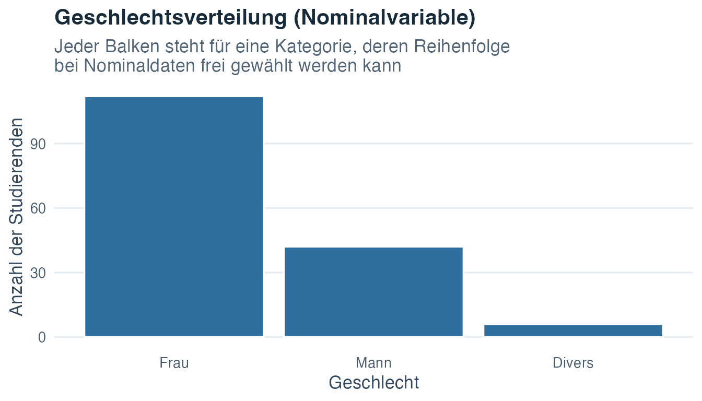
Ein Kreisdiagramm ist eine Alternative zum Säulendiagramm für nominalskalierte Variablen. Es eignet sich vor allem, wenn die Anteile weniger Kategorien am Ganzen hervorgehoben werden sollen. Statt der Säulenhöhe stellt der Winkel eines Sektors den Anteil dar. Der vollständige Kreis entspricht immer 100 % der Stichprobe.
Im Datensatz ist die Stressgruppe eine nominalskalierte Variable mit den Kategorien niedrige und hohe Belastung. Die Teilnehmenden ordneten sich vor der Prüfung selbst einer dieser Gruppen zu.
Zuerst werden dieselben beiden Häufigkeiten als Säulen dargestellt. Die Beschriftungen über den Säulen machen die genauen Werte sichtbar.
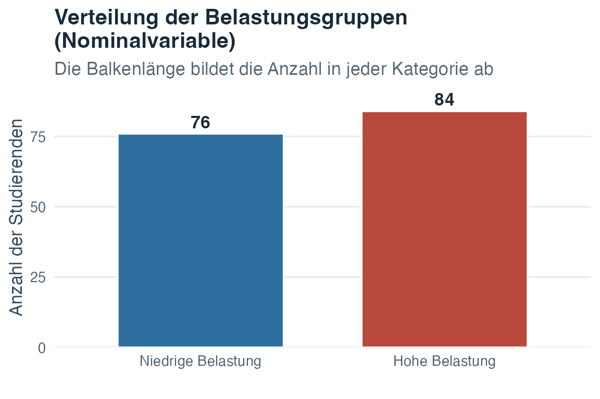
Das folgende Kreisdiagramm zeigt die identischen Häufigkeiten als Anteile eines Ganzen. Der Vergleich verdeutlicht die jeweilige Stärke: Säulenlängen lassen sich genauer vergleichen, während Kreissektoren hervorheben, welchen Anteil jede Kategorie an 100% hat.
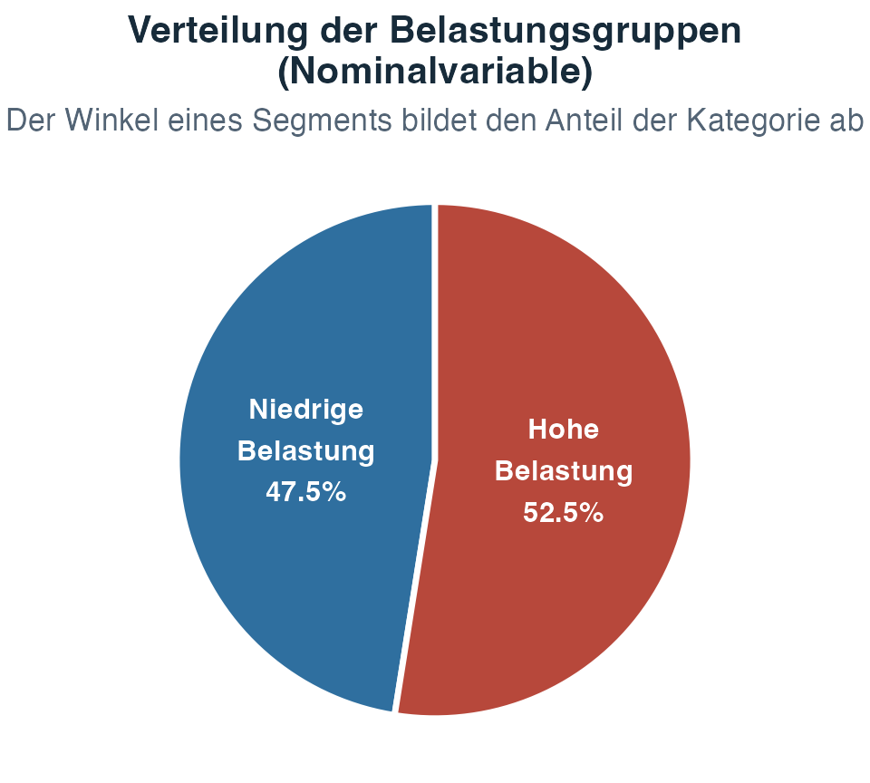
Ein geordnetes Säulendiagramm zeigt ordinalskalierte Variablen. Deren Kategorien besitzen eine sinnvolle Reihenfolge, die Abstände zwischen benachbarten Kategorien müssen aber nicht gleich sein. Anders als bei nominalen Daten müssen die Säulen in ihrer natürlichen Reihenfolge erscheinen. Eine Umordnung würde genau jene Information zerstören, die Ordinal- von Nominaldaten unterscheidet.
Die Studienzufriedenheit wird im Datensatz auf einer Skala von 1 bis 5 erhoben. 1 bedeutet sehr unzufrieden, 5 sehr zufrieden. Höhere Werte stehen für höhere Zufriedenheit. Es wird jedoch nicht angenommen, dass der Unterschied zwischen 1 und 2 gleich gross ist wie jener zwischen 4 und 5.
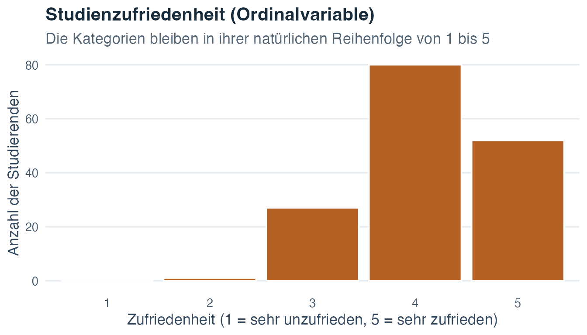
Ein Histogramm ist das wichtigste Diagramm für metrische Variablen, also Intervall-, Verhältnis- oder Absolutskalen. Es teilt den gesamten Wertebereich in gleich breite Intervalle, sogenannte Klassen, und zeichnet für jedes Intervall eine Säule. Deren Höhe zeigt, wie viele Beobachtungen in die Klasse fallen.
Für Histogramme gilt eine entscheidende Regel: Die Fläche muss proportional zur Häufigkeit sein. Wenn alle Klassen gleich breit sind, wie in diesem Beispiel, bilden Höhe und Fläche die Häufigkeit gleichermassen korrekt ab. Bei unterschiedlich breiten Klassen wäre die Höhe allein irreführend. Eine breitere Klasse würde bei gleicher Höhe mehr Beobachtungen zu enthalten scheinen als eine schmalere, selbst wenn die Häufigkeiten identisch wären.
In einem Dichtehistogramm ergibt sich die Höhe der Klasse \(j\) aus ihrer relativen Häufigkeit geteilt durch ihre Breite:
\[\text{Höhe}_j = \frac{f_j}{w_j}\]
Die Fläche beträgt dann \(w_j \times \text{Höhe}_j = f_j\). Auch die Wahl der Klassen beeinflusst das Erscheinungsbild. Zu wenige breite Klassen können wichtige Strukturen verdecken. Zu viele schmale Klassen können zufällige Schwankungen wie ein Muster aussehen lassen. Vergleiche mehrere plausible Klassenbreiten und bevorzuge eine Darstellung, die stabile Merkmale zeigt, ohne das dramatischste Bild zu suchen.
Die Prüfungsangst ist im Datensatz als mehrteiliger Summenwert von 0 bis 40 erfasst. Ein Gesamtwert von 0 bedeutet, dass bei keinem Angstitem eine Zustimmung erfolgte. Er belegt jedoch nicht die vollständige Abwesenheit des zugrunde liegenden Konstrukts. Für die deskriptive Analyse behandeln wir den Wert deshalb näherungsweise als intervallskaliert und vermeiden Verhältnisinterpretationen.
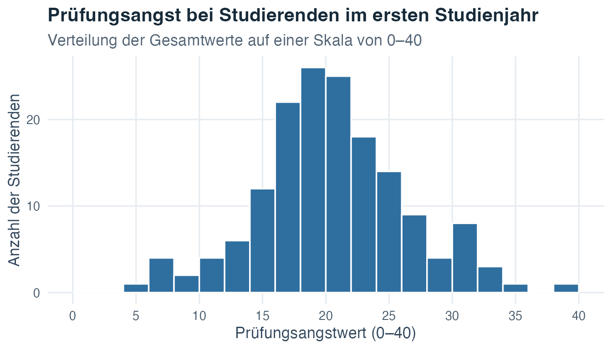
Ein Tukey-Boxplot, auch Box-Whisker-Diagramm genannt, fasst eine metrische Verteilung kompakt zusammen. Die Box zeigt das erste Quartil (Q1), den Median und das dritte Quartil (Q3). Die Whisker reichen bis zu den kleinsten beziehungsweise grössten beobachteten Werten innerhalb der durch den IQR bestimmten Grenzen. Beobachtungen, die weiter als das 1.5-Fache des IQR von der Box entfernt liegen, werden einzeln dargestellt und als mögliche Ausreisser gekennzeichnet.
Bevor wir Gruppen miteinander vergleichen, hilft es, die Bestandteile eines einzelnen Boxplots getrennt zu betrachten. Die nächste Abbildung verwendet konstruierte Kennwerte, um diesen Aufbau sichtbar zu machen. Sie ist eine schematische Darstellung der Boxplot-Bestandteile und keine Zusammenfassung, die aus einem zugrunde liegenden Rohdatensatz berechnet wurde.
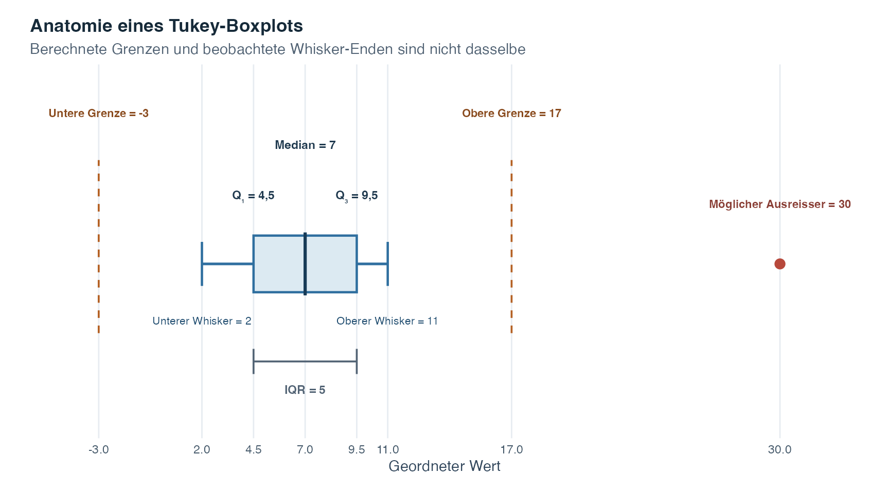
Lies die Abbildung von der Box nach aussen. Q1 und Q3 schliessen die mittlere Hälfte der geordneten Werte ein. Der Abstand zwischen ihnen ist deshalb der IQR. Der Median teilt die Box beim 50. Perzentil. Von jeder Boxkante aus legt das 1.5-Fache des IQR eine innere Grenze fest. Diese berechnete Schwelle dient dazu, möglicherweise ungewöhnliche Werte zu erkennen. Die Whisker reichen nicht automatisch bis zu diesen Grenzen. Sie enden bei der kleinsten und grössten Beobachtung, die noch innerhalb der Grenzen liegt. Der einzelne Punkt jenseits der oberen Grenze wird deshalb als möglicher Ausreisser dargestellt. Er sollte untersucht werden, doch die Abbildung allein beweist weder, dass er fehlerhaft ist, noch rechtfertigt sie seine Löschung.
Boxplots eignen sich besonders gut für Vergleiche mehrerer Gruppen, weil sie viele Informationen über die Verteilungen auf kleinem Raum zeigen.
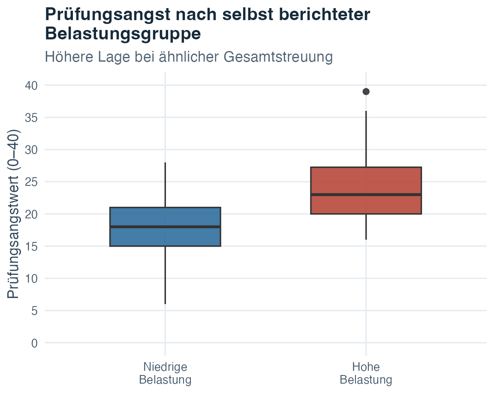
Ordne jedes Diagramm der Variablenart zu. Verwende Säulendiagramme oder sorgfältig gestaltete Kreisdiagramme für Nominaldaten, geordnete Säulendiagramme für Ordinaldaten und Histogramme oder Boxplots für metrische Daten. Prüfe die Grafik, bevor du die endgültigen numerischen Kennwerte wählst, und kontrolliere, ob Achsenskalierung, Klassendefinitionen und Bezugsgrössen die Daten unverfälscht darstellen.
In der Forschung müssen Variablen häufig umskaliert werden. Beispiele sind die Umrechnung von Celsius in Fahrenheit, die Angabe eines Fragebogenwerts als Prozent des Maximalwerts oder das Verschieben einer Skala um einen konstanten Betrag. Solche Operationen heissen lineare Transformationen.
Eine lineare Transformation erzeugt eine neue Variable \(y\) aus der ursprünglichen Variable \(x\) nach folgender Regel:
\[y_i = a + b \cdot x_i\]
Dabei ist \(a\) eine additive Verschiebung und \(b\) ein multiplikativer Streckungsfaktor. Die Wirkung auf deskriptive Kennwerte folgt einfachen Regeln.
Der Mittelwert wird mit derselben Formel transformiert wie die einzelnen Datenpunkte:
\[\bar{y} = a + b \cdot \bar{x}\]
Die Varianz wird mit \(b^2\) multipliziert. Die Verschiebung \(a\) beeinflusst die Variabilität nicht, weil sich die Abstände zwischen den Werten nicht ändern, wenn zu allen derselbe Betrag addiert wird:
\[s_y^2 = b^2 \cdot s_x^2\]
Die Standardabweichung wird mit dem Absolutbetrag von \(b\) multipliziert:
\[s_y = |b| \cdot s_x\]
Mit diesen Regeln lässt sich vorhersagen, wie sich Kennwerte beim Umskalieren verändern, ohne alle Berechnungen von Grund auf zu wiederholen.
Beispiel 1: Celsius in Fahrenheit. Die Umrechnungsformel lautet \(F = 32 + 1.8 \cdot C\), also \(a = 32\) und \(b = 1.8\). Angenommen, die mittlere Temperatur eines Datensatzes beträgt \(20\,^{\circ}\mathrm{C}\) bei einer Standardabweichung von \(5\,^{\circ}\mathrm{C}\). Nach der Umrechnung ergibt sich:
Die additive Verschiebung um 32 Grad verändert den Mittelwert, nicht aber Varianz oder Standardabweichung. Der Faktor 1.8 skaliert die Standardabweichung mit 1.8 und die Varianz mit \(1.8^2\). Zusammen ergeben die beiden Operationen einen Mittelwert von \(68\,^{\circ}\mathrm{F}\), eine Varianz von \(81\,(^{\circ}\mathrm{F})^2\) und eine SD von \(9\,^{\circ}\mathrm{F}\). Der Mittelwert entsteht nicht allein durch proportionale Skalierung.
Beispiel 2: Umskalierung eines Fragebogenwerts. Soll eine Forscherin einen Angstwert von 0 bis 40 als Prozentsatz des Maximums von 100 ausdrücken, lautet die Transformation \(y = 0 + 2.5 \cdot x\). Somit gilt \(a = 0\) und \(b = 2.5\). Ein Wert von 28 wird zu 70 %. Bei einem Gruppenmittelwert von 20 und einer Standardabweichung von 5 beträgt der neue Mittelwert \(2.5 \cdot 20 = 50\) und die neue Standardabweichung \(2.5 \cdot 5 = 12.5\).
Das Verständnis linearer Transformationen verhindert Missverständnisse, wenn Variablen umskaliert, zwischen Instrumenten umgerechnet oder über Studien hinweg verglichen werden.
Diese allgemeine mathematische Regel ist umfassender als die zulässigen Transformationen, durch die Skalenniveaus definiert werden. Bei einer Intervallskala muss \(b\) positiv sein, damit die Richtung erhalten bleibt. Bei einer Verhältnisskala muss zudem \(a\) gleich null sein, damit der natürliche Nullpunkt bewahrt wird. Ein negatives \(b\) kann für eine beabsichtigte Umpolung nützlich sein, kehrt aber die Rangfolge und die Interpretationsrichtung um. Die transformierte Variable muss deshalb entsprechend bezeichnet und interpretiert werden.
Eine lineare Transformation verändert Lage und Skala nach festen Regeln. Bei \(b > 0\) bleiben die Orientierung der Form und die Rangfolge erhalten. Bei \(b < 0\) wird die Verteilung gespiegelt und die Rangfolge umgekehrt. Die Verschiebung \(a\) verändert den Mittelwert, nicht aber die Variabilität. Der Betrag \(|b|\) skaliert die Standardabweichung, und \(b^2\) skaliert die Varianz.
Ein besonders wichtiger Spezialfall der linearen Transformation ist die z-Transformation, auch Standardisierung genannt.
Für jede Beobachtung \(x_i\) in einem Datensatz mit Mittelwert \(\bar{x}\) und Standardabweichung \(s\) lautet der z-Wert:
\[z_i = \frac{x_i - \bar{x}}{s}\]
Für eine nicht konstante Stichprobe mit einer definierten, von null verschiedenen Standardabweichung ist dies eine lineare Transformation mit \(a = -\bar{x}/s\) und \(b = 1/s\). Aus den allgemeinen Transformationsregeln folgen zwei Eigenschaften:
Der z-Wert einer Beobachtung gibt an, wie viele Standardabweichungen über oder unter dem Mittelwert sie liegt.
Wozu ist das nützlich? Zwei Studierende werden mit unterschiedlichen Instrumenten untersucht, die Prüfungsangst messen sollen. Person A erreicht 28 Punkte auf einer Skala von 0 bis 40. In der relevanten Referenzgruppe beträgt der Mittelwert 20 und die Standardabweichung 5. Der z-Wert ist \((28 - 20)/5 = 1.6\). Person B erreicht 73 Punkte auf einer Skala von 0 bis 100. In deren relevanter Referenzgruppe beträgt der Mittelwert 60 und die Standardabweichung 8. Der z-Wert ist somit \((73 - 60)/8 = 1.625\).
Die Rohwerte sind nicht direkt vergleichbar, weil sie unterschiedliche Skalen verwenden. Die z-Werte zeigen, dass beide Personen innerhalb ihrer jeweiligen Referenzverteilung eine ähnliche relative Position einnehmen, ungefähr 1.6 Standardabweichungen über dem Mittelwert. Dieser Vergleich ist nur sinnvoll, wenn die Instrumente dasselbe Konstrukt erfassen und die Referenzgruppen für die jeweilige Person angemessen sind. Eine Standardisierung macht unterschiedliche Konstrukte oder ungeeignete Referenzgruppen nicht automatisch vergleichbar.
Diese Eigenschaft ist für viele statistische Verfahren grundlegend. Standardisierte Regressionskoeffizienten, z-Tests, Korrelationskoeffizienten und zahlreiche weitere Konzepte beruhen auf der Idee der z-Transformation. Wer sie hier sicher versteht, kann spätere Verfahren leichter einordnen.
Ein z-Wert verändert nicht die relative Position einer Person innerhalb der gewählten Referenzverteilung. Er drückt diese Position lediglich in Standardabweichungseinheiten aus. Ein z-Wert von +1.0 bedeutet «eine Standardabweichung über dem Referenzmittelwert». Vergleiche zwischen Instrumenten setzen weiterhin ein gemeinsames Konstrukt, eine vergleichbare Messqualität und geeignete Referenzgruppen voraus.
Lage und Variabilität beschreiben zwei Dimensionen einer Verteilung, und die Form ergänzt eine weitere wesentliche Sicht. Sie zeigt, wie sich Werte über den Bereich verteilen. Die Form beeinflusst die Wahl der Kennwerte, die Interpretation von Gruppenunterschieden und das Verständnis des zugrunde liegenden menschlichen oder sozialen Prozesses. Die kleinen Lehrdatensätze unten wurden so konstruiert, dass jede Form leicht erkennbar ist. Sie sind fiktiv und stammen nicht aus Messungen realer Personen.
Symmetrie, Modalität und Kurtosis beschreiben voneinander unabhängige Dimensionen, die gemeinsam auftreten können. Modalität beschreibt die Anzahl und das Muster klarer Gipfel oder Hauptkonzentrationen einer Verteilung. Kurtosis beschreibt, wie leicht Werte weit in den Randbereichen auftreten, verglichen mit einer symmetrischen glockenförmigen Referenzverteilung mit derselben Gesamtstreuung. Eine Verteilung kann symmetrisch und bimodal oder rechtsschief und unimodal sein. Beschreibe jede bedeutsame Dimension, statt der Verteilung eine einzige umfassende Formbezeichnung zuzuweisen.
Symmetrische Verteilungen sehen auf beiden Seiten der Mitte annähernd gleich aus. Werte oberhalb und unterhalb des Mittelwerts treten ungefähr gleich häufig auf. Bei perfekter Symmetrie stimmen Mittelwert und Median genau überein. Die bekannte Glockenform ist das klassische Beispiel.
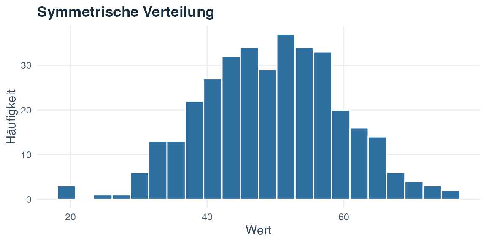
Worauf du achten solltest. Die Säulen steigen zu einem mittleren Gipfel an und fallen danach auf beiden Seiten in einem ähnlichen Muster ab. Der linke und der rechte Randbereich sind ungefähr gleich lang. Keine Seite enthält also eine sichtbar längere Spur von Werten.
Rechtsschiefe Verteilungen, auch positiv schiefe Verteilungen genannt, haben einen langen Randbereich zu hohen Werten. Die meisten Beobachtungen liegen im niedrigen Bereich, wenige sehr hohe Werte ziehen den Rand nach rechts. Der Mittelwert liegt häufig über dem Median, weil er auf diese hohen Werte empfindlich reagiert. Diese Reihenfolge ist jedoch eine Tendenz und weder Definition noch Beleg für Rechtsschiefe. Reaktionszeiten, Einkommen und Anzahlen seltener Verhaltensweisen sind häufig rechtsschief. Die meisten Personen weisen niedrige bis mittlere Werte auf, wenige liegen weit darüber.
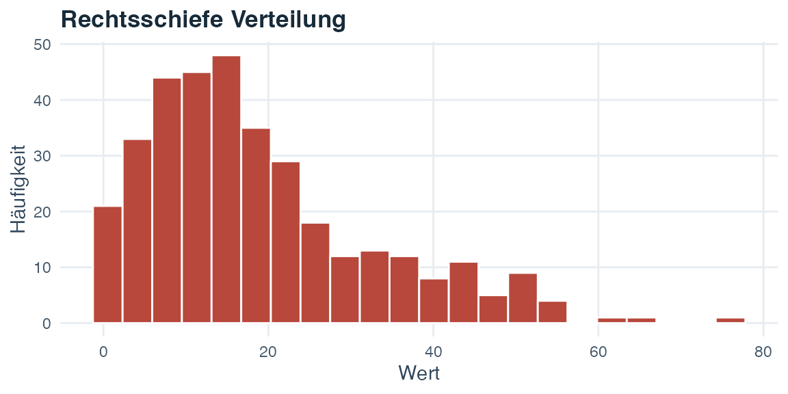
Worauf du achten solltest. Die höchsten Säulen liegen bei den niedrigeren Werten und bilden links im Diagramm einen Hauptgipfel. Mit steigenden Werten werden die Säulen niedriger und reichen weiter zum oberen Ende. Diese verlängerte Spur von Säulen ist der rechte Verteilungsschwanz, nach dem die Form benannt ist.
Linksschiefe Verteilungen, auch negativ schiefe Verteilungen genannt, spiegeln dieses Muster. Die meisten Werte liegen am oberen Ende, wenige sehr niedrige Werte erzeugen einen langen Randbereich nach links. Der Mittelwert liegt häufig unter dem Median, doch die Grafik und die übrige Verteilung müssen die Form bestätigen. Ergebnisse eines sehr leichten Tests sind oft linksschief, weil die meisten Studierenden gut abschneiden und nur wenige grosse Schwierigkeiten haben.
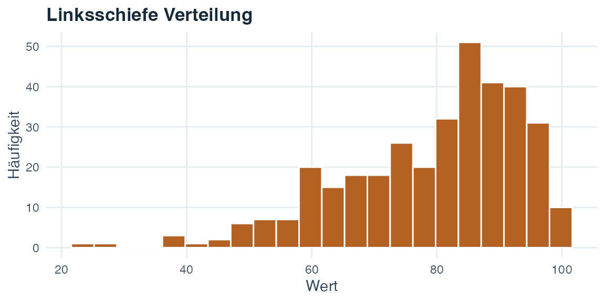
Worauf du achten solltest. Hier liegen die höchsten Säulen bei den höheren Werten und bilden rechts einen Hauptgipfel. Zum unteren Ende hin werden die Säulen kleiner und reichen weiter nach links. Diese längere Spur auf der Seite der niedrigen Werte ist der linke Verteilungsschwanz.
Unimodale Verteilungen besitzen einen einzigen Gipfel, also einen Wertebereich, der deutlich häufiger vorkommt als die übrigen. Eine klare einzelne Häufung erleichtert es, die Hauptkonzentration der Werte mit einem Lagemass und einem Streuungsmass zusammenzufassen. Ob ein statistisches Verfahren geeignet ist, hängt dennoch von seinen spezifischen Voraussetzungen ab. Diese können etwa Residuen oder eine Stichprobenverteilung betreffen und nicht die Modalität der Rohvariable.
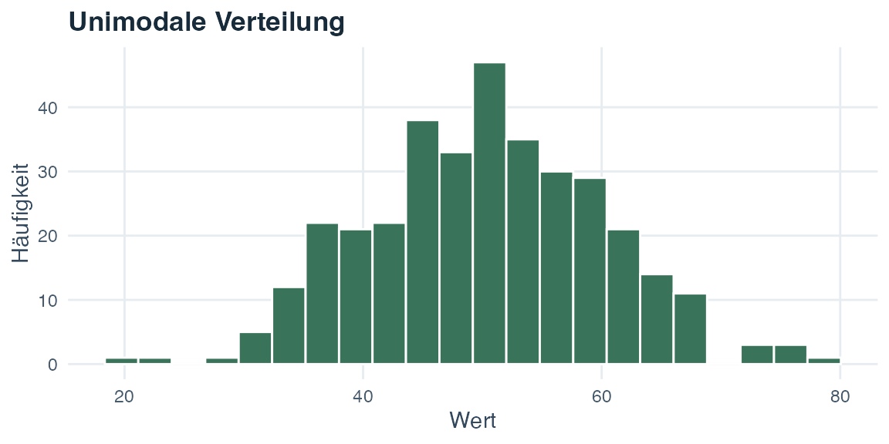
Worauf du achten solltest. Die Säulen bilden nahe der Mitte einen klaren Gipfel und werden zu beiden Randbereichen hin niedriger. Entscheidend ist dieser einzelne Gipfel. Eine unimodale Verteilung muss nicht vollkommen symmetrisch sein.
Bimodale Verteilungen besitzen zwei getrennte Gipfel. Dieses Muster kann auf eine Mischung verschiedener Prozesse oder Teilpopulationen hindeuten, doch die Grafik allein identifiziert deren Ursache nicht. Ein Histogramm von Prüfungswerten könnte Gipfel bei 55 und 85 zeigen, wenn Studierende mit unterschiedlichen Vorbereitungsmustern gemeinsam ausgewertet werden. Ein einzelner Mittelwert von etwa 70 könnte dann beide Gipfel verdecken. Die Ursache des Musters sollte untersucht und die vollständige Verteilung gezeigt werden. Teilgruppen werden nur dann getrennt beschrieben, wenn eine inhaltlich begründbare Gruppierungsvariable diese Interpretation stützt.
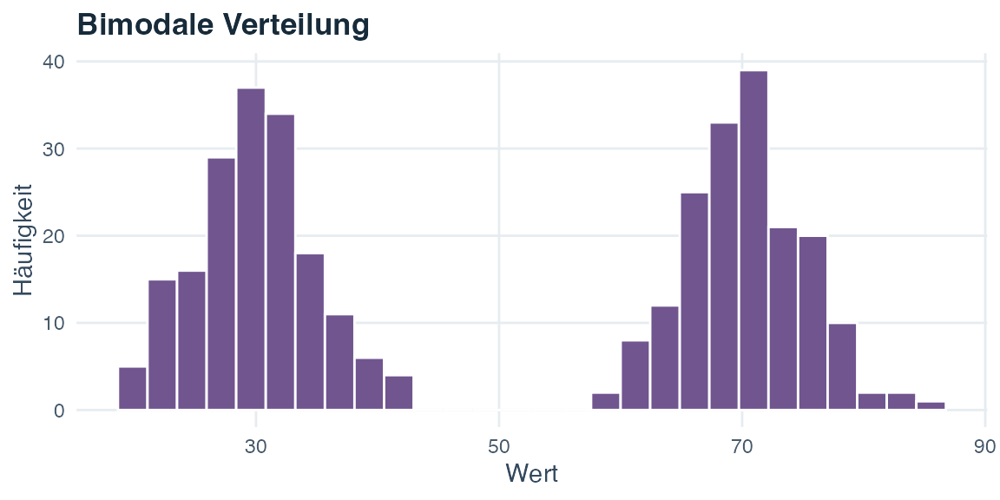
Worauf du achten solltest. Zwei getrennte Gruppen hoher Säulen bilden zwei Gipfel, einen nahe 30 und einen nahe 70. Die niedrigeren Säulen dazwischen erzeugen ein sichtbares Tal, während die äusseren Säulen in die beiden Randbereiche auslaufen. Ein einzelner Mittelwert nahe dem Tal würde keine der beiden Hauptkonzentrationen gut beschreiben.
Verteilungen mit hoher Kurtosis gewichten extreme Abweichungen stärker als eine Normalverteilung mit vergleichbarer Varianz. Daher treten bei ihnen eher ungewöhnlich weit entfernte Beobachtungen auf. Ein hoher mittlerer Gipfel kann wie im konstruierten Beispiel unten vorkommen, doch die Gipfelhöhe definiert Kurtosis nicht.
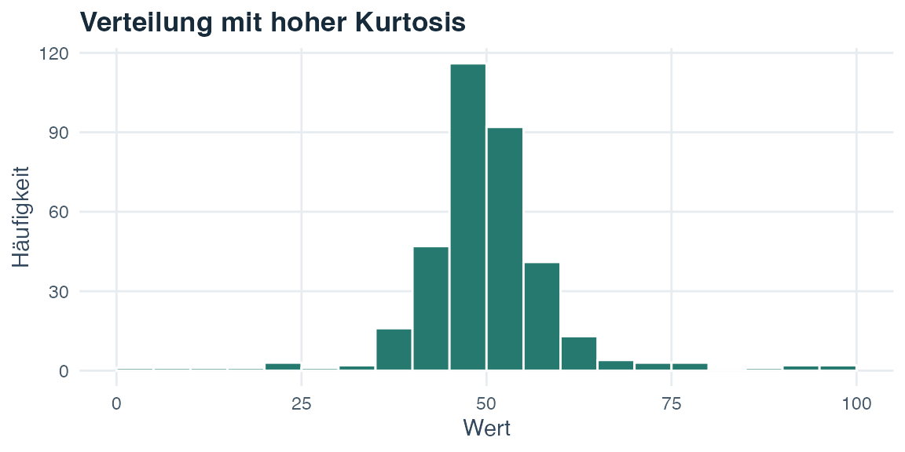
Worauf du achten solltest. Eine schmale Gruppe sehr hoher Säulen erzeugt einen ausgeprägten mittleren Gipfel. Gleichzeitig reichen einige Beobachtungen weit in beide Randbereiche. Diese weit entfernten Randwerte und nicht die Höhe der mittleren Säule allein sind das wichtige Zeichen höherer Kurtosis.
Verteilungen mit niedriger Kurtosis gewichten extreme Abweichungen schwächer als eine Normalverteilung mit vergleichbarer Varianz. Die unten gezeigte begrenzte Uniformverteilung ist ein Beispiel: Werte innerhalb ihrer Grenzen sind annähernd gleich wahrscheinlich, und ihre Randbereiche enden abrupt. Eine flache Mitte kann vorkommen, ist aber nicht die definierende Eigenschaft. Beide Kurtosisbeispiele verwenden dieselbe Stichprobengrösse, angestrebte Standardabweichung, Klassengrenzen und horizontale Skala, damit das Verhalten der Randbereiche nicht mit der Gesamtstreuung oder den Darstellungsentscheidungen verwechselt wird.
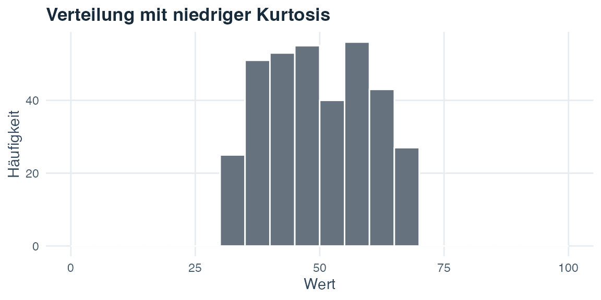
Worauf du achten solltest. Die Säulen verteilen sich gleichmässiger über ein begrenztes mittleres Intervall, sodass kein ausgeprägter mittlerer Gipfel entsteht. Sie enden zudem vor den weit entfernten Randwerten der Abbildung mit hoher Kurtosis. Beide Beispiele besitzen dieselbe angestrebte Standardabweichung. Das Beispiel mit hoher Kurtosis verbindet aber eine dichte Mitte mit wenigen weit entfernten Werten, während sich die Werte im Beispiel mit niedriger Kurtosis gleichmässiger verteilen und weniger extreme Randwerte vorkommen. Genau dieser Vergleich zeigt, weshalb die Gipfelhöhe Kurtosis nicht allein definieren kann.
Verteilungsform und Kennwerte sind eng miteinander verbunden. Bei symmetrischen, unimodalen Verteilungen liefern Mittelwert und Standardabweichung häufig eine nützliche Beschreibung. Bei stark schiefen Verteilungen sind Median und IQR meist informativer, weil Extremwerte sie kaum beeinflussen. Bei bimodalen Verteilungen kann ein einzelnes Lagemass wichtige Strukturen verdecken. Die Verteilung sollte gezeigt und mögliche Erklärungen sollten untersucht werden, bevor über eine Teilgruppenanalyse entschieden wird. Die Visualisierung der Daten vor der Wahl der Kennwerte ist ein wesentlicher Teil dieser Entscheidung.
Die Verteilungsform hilft zu bestimmen, welche Kennwerte informativ sind. Symmetrische, unimodale Daten lassen sich häufig sinnvoll mit Mittelwert und Standardabweichung beschreiben. Bei schiefen Daten sind Median und IQR oft geeigneter. Bei bimodalen Daten müssen beide Gipfel gezeigt und untersucht werden. Getrennte Teilgruppenzusammenfassungen sind nur gerechtfertigt, wenn die Gruppierung inhaltlich gestützt ist. Daten sollten stets visualisiert werden, bevor eine Zusammenfassung gewählt wird, denn eine kleine Tabelle aggregierter Kennwerte kann die Verteilungsform verdecken.
Visualisierungen lenken die Aufmerksamkeit, bevor die meisten Lesenden die genauen Zahlen prüfen. Eine irreführende Grafik muss keinen falschen Wert enthalten. Entscheidungen zu Achsen, Formen, Kategorien, Bezugsgrössen und ausgelassenem Kontext können ein Merkmal hervorheben und ein anderes verschwinden lassen. Diese Entscheidungen bewusst zu prüfen, gehört zur kritischen Datenkompetenz.
Stelle drei Fragen, wenn eine Grafik einen starken Eindruck erzeugt. Welches visuelle Merkmal fiel mir zuerst auf? Welche numerische Grösse soll es darstellen? Würde eine vertretbare Änderung der Darstellung die sichtbare Geschichte verändern? Die folgenden Beispiele zeigen, weshalb diese Fragen wichtig sind.
Abschneiden der y-Achse. Beginnt die vertikale Achse eines Säulendiagramms oberhalb von null, kann ein kleiner absoluter Unterschied fast die gesamte Zeichenfläche einnehmen. Säulenlängen werden normalerweise von einer Basislinie aus gelesen. Wird der grösste Teil dieser Basis entfernt, wirkt das Verhältnis der Säulen übertrieben. Der Wert 72 ist nur ungefähr 6 % grösser als 68. Auf einer Achse ab 64 kann der sichtbare Teil einer Säule dennoch mehrfach so lang wie jener der anderen erscheinen.
Stauchen oder Strecken der Skala. Achsenabstand und Achsenbereich verändern die scheinbare Steigung einer Linie oder die scheinbare Grösse eines Unterschieds. Eine Linie, die auf einer y-Achse von 0 bis 100 von 20 auf 22 steigt, wirkt fast flach. Auf einer Achse von 19 bis 23 wirkt dieselbe Linie steil. Eine hohe und schmale Zeichenfläche kann die Steigung noch verstärken, während eine niedrige und breite Fläche sie abflacht. Die numerische Veränderung beträgt in jeder Version zwei Einheiten. Lies deshalb die Achsenwerte, bevor du auf den Winkel reagierst.
Die nächsten beiden Diagramme enthalten dieselben fiktiven mittleren Wohlbefindenswerte von 68 und 72. Nur der dargestellte vertikale Bereich ändert sich.
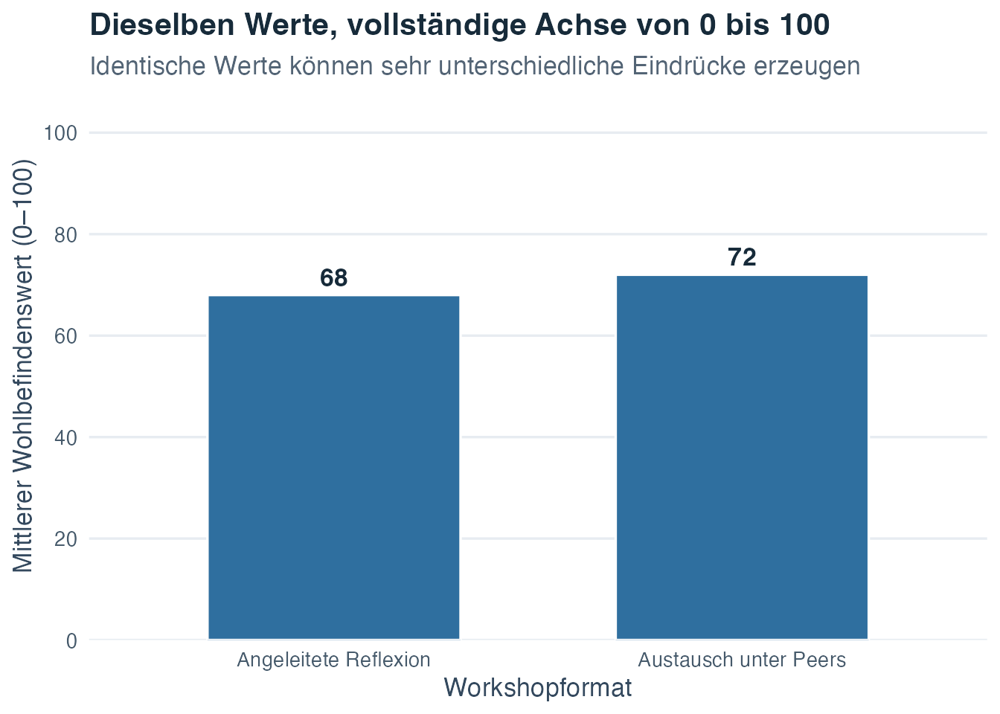
Auf der vollständigen Skala von 0 bis 100 wirkt der Unterschied von vier Punkten im Verhältnis zum gesamten Wertebereich des Instruments moderat. Beide genauen Werte lassen sich weiterhin an den Beschriftungen ablesen.
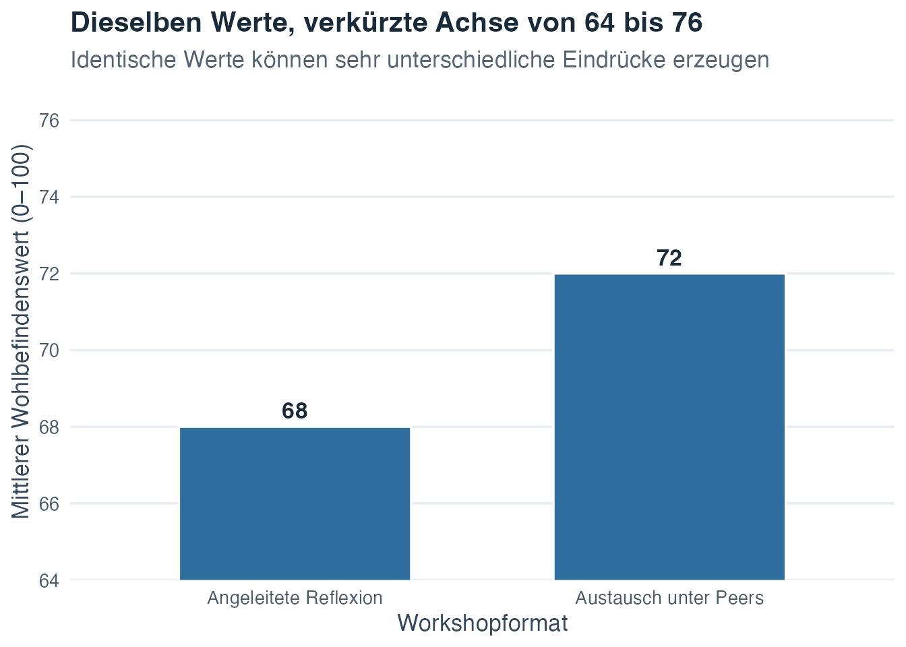
Im verkürzten Diagramm beherrscht derselbe Unterschied von vier Punkten die Darstellung. Ein eingeschränkter Skalenbereich kann helfen, kleine Veränderungen zu untersuchen, wenn er deutlich beschriftet ist. Das Abschneiden der Achse ist bei Säulen jedoch riskant, weil ihre Länge von einer Basislinie aus interpretiert wird. Ein Punktdiagramm auf einer klar beschrifteten, engen Skala ist oft die transparentere Wahl, wenn ein enger Wertebereich inhaltlich wichtig ist.
Das Problem liegt in der fehlenden Übereinstimmung zwischen dem visuellen Hinweis und dem beabsichtigten Vergleich. Säulen fordern zum Vergleich von Längen auf und geben null dadurch eine besondere Rolle. Punkte fordern zum Vergleich von Positionen auf und können auf einer klar beschrifteten eingeschränkten Achse gut funktionieren. Ist ein enger Bereich erforderlich, sollte er in der Bildunterschrift genannt werden. Zeige die genauen Werte und wähle eine Darstellungsform, die keine irreführenden Längenverhältnisse nahelegt.
Ungleiche Klassenbreiten in Histogrammen. Bei unterschiedlich breiten Klassen muss die Fläche jeder Säule und nicht ihre Höhe die Häufigkeit darstellen. Eine doppelt so breite Klasse muss bei gleicher Beobachtungszahl halb so hoch gezeichnet werden. Werden breitere und schmalere Klassen mit derselben Höhe dargestellt, erscheinen in den breiteren Klassen fälschlich mehr Daten. Prüfe vor der Interpretation der Höhen als Häufigkeiten deshalb immer, ob alle Klassen gleich breit sind.
Auch bei lauter gleich breiten Klassen kann eine andere Klassenbreite die sichtbaren Einzelheiten verändern. Die folgenden beiden Histogramme verwenden dieselben 160 Beobachtungen zur Prüfungsangst:
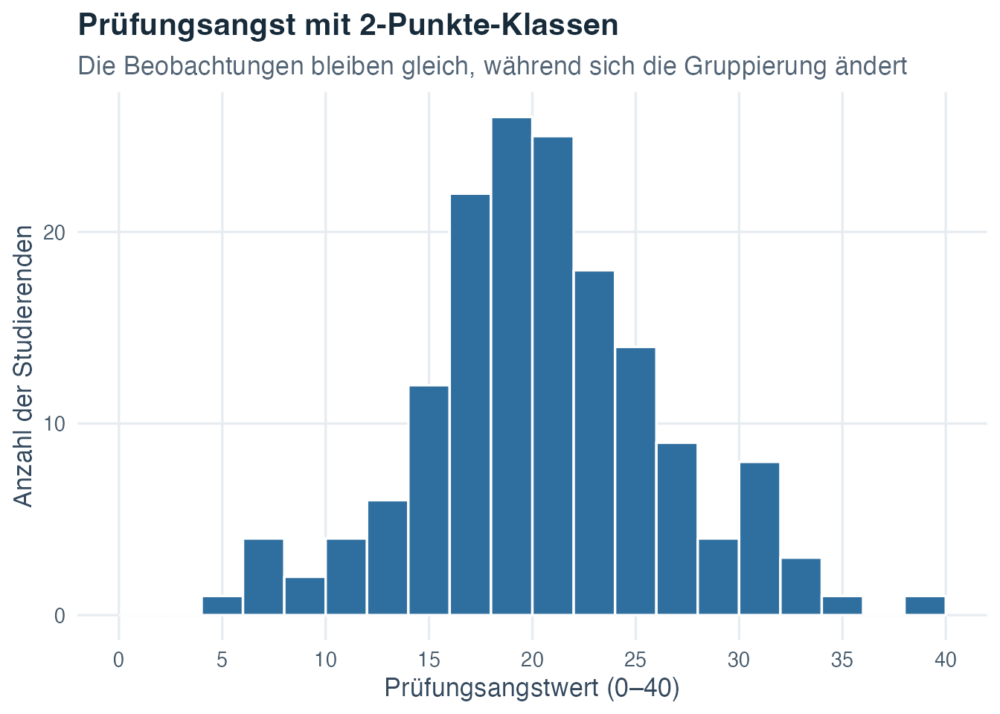
Zwei-Punkte-Klassen zeigen kleine lokale Anstiege und Einbrüche. Einige dieser Unregelmässigkeiten beruhen auf der Variation einer endlichen Stichprobe und nicht auf stabilen Merkmalen der Verteilung.
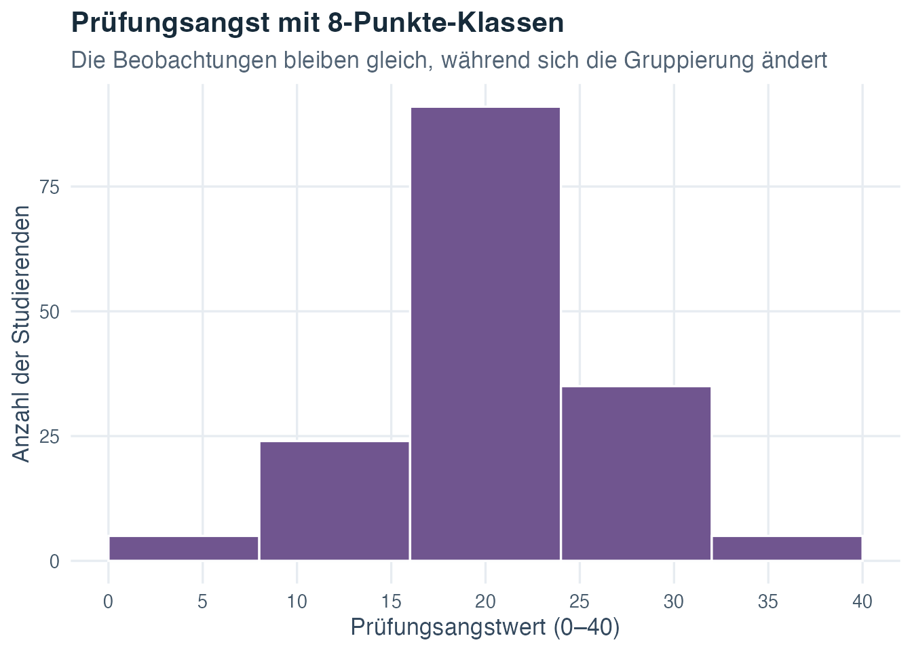
Acht-Punkte-Klassen betonen die breite Konzentration nahe der Mitte und verbergen einige lokale Einzelheiten. Stichprobengrösse, Beobachtungen, Wertebereich, Mittelwert und Standardabweichung bleiben unverändert. Keine der beiden Darstellungen ist automatisch unredlich. Problematisch wird es, wenn eine Klassenbreite nur deshalb gewählt wird, weil sie einen dramatischen Gipfel erzeugt, eine unbequeme Lücke verschwinden lässt oder mehrere Gruppen andeutet, die bei anderen vertretbaren Einteilungen nicht sichtbar sind. Vergleiche mehr als eine vertretbare Klasseneinteilung und gib die gewählte Regel an, wenn eine visuelle Schlussfolgerung von ihr abhängt.
Häufigkeiten und Prozentwerte mit unterschiedlichen Bezugsgrössen. Angenommen, in Workshop A verbessern sich 24 von 40 Lernenden und in Workshop B 30 von 100. Die absoluten Häufigkeiten lassen Workshop B grösser erscheinen, weil 30 grösser als 24 ist. Die Prozentwerte erzählen eine andere Geschichte: In A verbessern sich 60 % und in B 30 %. Wer nur Häufigkeiten oder nur Prozentwerte zeigt, kann den Vergleich lenken. Gib bei unterschiedlich grossen Gruppen Zähler und Nenner gemeinsam an.
Prozentwerte ohne Bezugsgrösse. Die Aussage «38 % verbesserten sich» lässt wichtige Fragen offen. Waren es 19 von 50 oder 1,900 von 5,000 Personen? Wie wurde Verbesserung definiert? Wie viele Daten fehlten? Derselbe Prozentwert kann auf sehr unterschiedlichen Evidenzmengen beruhen. Die selektive Angabe eines günstigen Prozentwerts kann ausserdem verdecken, welche Ergebnisse unverändert blieben oder schlechter wurden.
Fläche, Volumen und dekorative Bilder. Ein Symbol, das doppelt so hoch und doppelt so breit ist, besitzt die vierfache Fläche. Wenn sich der dargestellte Wert lediglich verdoppelt hat, erzeugt das Bild einen viel grösseren visuellen Unterschied. Dreidimensionale Säulen verursachen ein ähnliches Problem, weil Perspektive und Volumen mit der tatsächlichen Höhe konkurrieren. Verwende für gewöhnliche Vergleiche eine eindimensionale Position oder Länge und lasse dekorative Elemente keine statistische Bedeutung tragen.
Ausgewählte Zeitfenster und ausgelassene Kategorien. Ein Verlauf kann stetig positiv erscheinen, wenn die Grafik unmittelbar nach einem ungewöhnlich niedrigen Jahr beginnt und an einem vorübergehenden Höchstwert endet. Eine Kategorie kann dominant wirken, wenn eine relevante Vergleichsgruppe fehlt. Frage, weshalb der gezeigte Zeitraum genau dort beginnt und endet, ob alle inhaltlich relevanten Kategorien enthalten sind und ob das Muster in einem etwas breiteren Ausschnitt bestehen bleibt.
Zwei vertikale Achsen. Werden zwei Reihen mit getrennten y-Achsen in eine Grafik gelegt, kann jede Achse unabhängig skaliert werden. Durch passend gewählte Bereiche lassen sich fast beliebige Linien gemeinsam ansteigen. Die visuelle Ausrichtung kann einen Zusammenhang nahelegen, obwohl der numerische Zusammenhang schwach ist oder die Einheiten inhaltlich nichts miteinander zu tun haben. Getrennte Felder mit ausgerichteten Zeitachsen, direkte numerische Vergleiche oder ein Streudiagramm machen den Zusammenhang oft ehrlicher beurteilbar.
Die folgende Tabelle übersetzt diese Beispiele in eine wiederverwendbare Leseroutine:
| Darstellungsentscheidung | Prüffrage | Weshalb sie irreführen kann | Transparentere Lösung |
|---|---|---|---|
| Abgeschnittene Säulenachse | Wo beginnt die Basislinie? | Sichtbare Säulenlängen können einen kleinen Unterschied übertreiben. | Säulen bei null beginnen lassen oder klar beschriftete Punkte verwenden. |
| Gestreckte oder gestauchte Achsen | Wie gross ist die numerische Veränderung? | Das Seitenverhältnis verändert die scheinbare Steigung. | Teilstrichwerte lesen und genaue Veränderungen zeigen. |
| Histogrammklassen | Zeigt eine andere vertretbare Breite dieselbe Struktur? | Ausgewählte Klassen können Gipfel und Lücken erzeugen oder verdecken. | Vertretbare Breiten vergleichen und die Regel nennen. |
| Häufigkeit oder Prozentwert allein | Wie lauten Zähler und Nenner? | Ungleiche Gruppengrössen können den sichtbaren Vergleich umkehren. | Häufigkeit, Gesamtzahl und Prozentwert gemeinsam berichten. |
| Skalierte Bilder oder 3D-Formen | Wächst Fläche oder Volumen schneller als der Wert? | Mehrere visuelle Dimensionen vergrössern den scheinbaren Unterschied. | Den Wert durch Position oder eindimensionale Länge darstellen. |
| Ausgewählter Zeitraum oder Kategorien | Welcher relevante Kontext liegt ausserhalb des Ausschnitts? | Auslassungen können einen passenden Verlauf oder Vergleich erzeugen. | Das Fenster begründen und relevante Alternativen zeigen. |
| Zwei y-Achsen | Wurden beide Skalen unabhängig gewählt? | Achsenentscheidungen können visuelle Übereinstimmung erzeugen. | Getrennte ausgerichtete Felder verwenden oder den Zusammenhang direkt untersuchen. |
Prüfe vor der Interpretation einer Darstellung Achsenbeschriftungen, Skalenbereiche, Klassendefinitionen, Bezugsgrössen, Stichprobengrösse, Messmethode, fehlende Daten und begleitende numerische Kennwerte. Zahlen und Grafiken erhalten ihre Bedeutung durch die Mess- und Darstellungsentscheidungen, aus denen sie entstanden sind. Eine klare Bildunterschrift sollte diese Entscheidungen leichter prüfbar machen.
Grafiken und Prozentwerte können irreführen, ohne falsche Zahlen zu verwenden. Prüfe Achsenursprung und Wertebereich, Klassendefinitionen im Histogramm, Bezugsgrösse, Stichprobengrösse und Messmethode. Diese Gewohnheit schützt dich davor, selbst getäuscht zu werden oder andere unbeabsichtigt irrezuführen.
Diesen Fehlern liegt dasselbe Problem zugrunde: Ein statistischer Kennwert wird verwendet oder interpretiert, ohne zu prüfen, ob Variable, Skalenniveau und beobachtete Verteilung ihn rechtfertigen. Prüfe Skalenniveau und Datenqualität, untersuche die Verteilung und wähle und interpretiere erst danach den Kennwert.
Deskriptive Statistik ist wichtig, weil Evidenz uns häufig in verdichteter Form erreicht. Nachrichtenberichte, politische Diskussionen, Forschungsartikel, institutionelle Berichte und alltägliche Behauptungen zeigen oft einen Mittelwert, einen Prozentwert oder eine auffällige Grafik. Du kannst diese Verdichtung nun verlangsamen. Du kannst fragen, was gemessen wurde, welche Fälle in den Datensatz gelangten, ob der gewählte Kennwert zum Skalenniveau passt, wie viel Variation das Zentrum umgibt und was eine Grafik sichtbar macht oder verdeckt.
Diese Gewohnheit verbessert die Qualität einer Interpretation. Ein Mittelwert steht nicht mehr für jede Person. Ein Gruppenunterschied führt zur Prüfung beider Verteilungen. Ein ungewöhnlicher Wert wird im Kontext untersucht. Eine überzeugende Grafik wird zu einer Reihe von Entscheidungen über Achsen, Kategorien und Bezugsgrössen, die du prüfen kannst. Deskriptive Statistik gibt dir eine Sprache, mit der du die Struktur von Evidenz erkennst, bevor du über ihre Bedeutung entscheidest.
Der Arbeitsablauf besitzt nun eine klare Logik. Das Skalenniveau zeigt, welche Operationen sinnvoll sind. Eine Häufigkeitstabelle hält fest, wie oft Werte vorkommen. Lagemasse verorten einen typischen Wert, Streuungsmasse zeigen die Grösse der Unterschiede und Grafiken machen Muster sichtbar, die eine einzelne Zahl verbergen kann. Durch die Standardisierung lässt sich die Lage eines Werts in Standardabweichungseinheiten ausdrücken. Zusammen machen diese Schritte aus Rohbeobachtungen eine begründete Beschreibung der Stichprobe.
Das nächste Thema stellt eine neue Frage. Hier haben wir die tatsächlich beobachteten Werte beschrieben. Im Thema Wahrscheinlichkeit fragen wir, welche Ergebnisse unter einem festgelegten Vorgang eintreten könnten und wie wahrscheinlich sie sind. Die Verbindung ist eng. Die relativen Häufigkeiten dieses Themas werden zu Wahrscheinlichkeiten, wenn aus einer festen Menge ausgewählt wird. Verteilungen erhalten neben ihrer Form auch Wahrscheinlichkeiten, und Mittelwert sowie Varianz werden zu Eigenschaften von Wahrscheinlichkeitsmodellen. Später helfen diese Ideen zu erklären, weshalb der Mittelwert einer Stichprobe von jenem einer anderen Stichprobe abweicht.
Nimm eine Arbeitsgewohnheit mit. Bestimme zuerst, was jede Variable bedeutet, untersuche danach ihre Verteilung und beginne erst dann mit einer Berechnung oder einem Modell. Die Wahrscheinlichkeit baut auf dieser klaren Beschreibung auf und ergänzt eine begründete Darstellung möglicher Ergebnisse und ihrer Wahrscheinlichkeiten.
Wir führen die bisherigen Ideen nun in einer Simulation zusammen. Eine Simulation ist ein computergeneriertes Beispiel, das Regeln folgt, die zu Lehrzwecken festgelegt wurden. Damit können wir einen vollständigen Analyseablauf an einem zusammenhängenden Datensatz üben. Die Werte stammen aber nicht aus Messungen realer Personen und erlauben deshalb keine Aussage über die Wirklichkeit.
Der Computer erzeugt die Werte mit einem Zufallszahlengenerator. Das ist eine Reihe schrittweiser Computeranweisungen, auch Algorithmus genannt, deren Werte sich wie zufällige Ergebnisse verhalten. Das Programm benötigt dennoch einen Ausgangspunkt. Diese Startzahl heisst Startwert (englisch seed). Wenn eine andere Person denselben Startwert und dieselben Anweisungen verwendet, erzeugt der Generator dieselben Werte erneut. Das Ergebnis ist reproduzierbar. Das bedeutet, dass alle Lernenden genau dasselbe Beispiel wiederherstellen und prüfen können. Ein anderer Startwert würde einen anderen, aber ähnlich aufgebauten Lehrdatensatz erzeugen.
Stell dir nun eine fiktive Studie vor, in der 160 Studierende im ersten Studienjahr eine Woche vor einer wichtigen Prüfung einen kurzen Fragebogen beantworten. Dieser Rahmen gibt uns einen Grund, den gesamten deskriptiven Ablauf anzuwenden: Eine lange Tabelle mit Punktzahlen zeigt noch nicht, was typisch ist, wie stark die Werte streuen oder ob zwei Gruppen unterschiedliche Bereiche der Skala einnehmen. Wir gehen deshalb langsam von den Zeilen des Datensatzes zu Häufigkeiten, numerischen Zusammenfassungen, Grafiken, Gruppenvergleichen und standardisierten Werten über.
Behalte drei Fragen im Blick, während sich das Beispiel entwickelt:
Wie sieht die Verteilung der Prüfungsangstwerte in der beobachteten Stichprobe aus? Welche Lage- und Streuungsmasse beschreiben sie ehrlich? Erzählen die numerischen Zusammenfassungen und die Grafiken eine stimmige Geschichte, wenn Studierende mit selbstberichteter niedriger und hoher aktueller Belastung verglichen werden?
Das sind deskriptive Fragen. Sie fragen danach, wie die künstliche Stichprobe aussieht, und nicht danach, ob Belastung Angst verursacht.
Vorgesehene Grundgesamtheit und beobachtete Stichprobe. Die vorgesehene Grundgesamtheit besteht aus Studierenden im ersten Studienjahr, die sich auf vergleichbare Prüfungen vorbereiten. Der beobachtete Datensatz ist eine simulierte Stichprobe von 160 Studierenden. Weil diese Werte erzeugt und nicht in jener Grundgesamtheit erhoben wurden, eignen sie sich zum Erlernen des Analyseablaufs, erlauben aber keine Schätzung für eine reale Grundgesamtheit.
Für jede Person werden folgende Variablen erfasst:
id,Niedrige Belastung oder Hohe Belastung),Frau, Mann, Divers),| Variable | Rolle und Skalenniveau | Geeignete deskriptive Behandlung |
|---|---|---|
id |
Anonymer nominaler Identifikator | Nur zur Unterscheidung der Zeilen verwenden, nicht mitteln |
group |
Nominale Gruppierungsvariable | Häufigkeiten, Prozentanteile, Säulen- oder Kreisdiagramm und gruppenweise Vergleiche |
gender |
Nominale Hintergrundvariable | Häufigkeiten, Prozentanteile und Säulendiagramm |
exam_anxiety |
Summenwert aus mehreren Items, der näherungsweise als intervallskaliert behandelt wird | Mittelwert mit Standardabweichung (SD), Median mit Interquartilsabstand (IQR), Histogramm, Boxplot und z-Werte |
sleep_hours |
Verhältnisskalierte Variable | Plausibilitätsbereich, je nach Form Mittelwert mit SD oder Median mit IQR |
satisfaction |
Ordinale Bewertung von 1 bis 5 | Geordnete Häufigkeiten, Prozentanteile, Median und geordnetes Säulendiagramm |
Lies die Tabelle Zeile für Zeile. Die ersten drei Variablen sind Bezeichnungen. Für Stressgruppe und Geschlecht passen Häufigkeiten und Prozentanteile, während die ID nur dazu dient, die Zeilen auseinanderzuhalten. Die nächsten beiden Variablen erfassen numerische Mengen oder Punktzahlen, sodass Lage und Streuung nützliche Informationen liefern können. Die Zufriedenheit ist geordnet, doch die Abstände zwischen ihren fünf Antwortkategorien sind nicht garantiert gleich. Deshalb bewahren wir die Reihenfolge der Kategorien und betonen Häufigkeiten und Median. Die ID wird bewusst aus den Berechnungen ausgeschlossen, weil ihre Ziffern lediglich eine Zeile benennen.
So erzeugt der Computer die Daten. Wir verwenden auf der gesamten Seite denselben Startwert. Die Anweisungen erzeugen Stressgruppe und Geschlecht als Kategorien. Schlaf- und Prüfungsangstwerte unterscheiden sich von Person zu Person, wobei der Gruppe mit hoher Belastung eine höhere mittlere Angst und eine geringere mittlere Schlafdauer zugewiesen werden. Die Zufriedenheit fällt tendenziell niedriger aus, wenn die als z-Wert ausgedrückte Angst höher ist. Schritt 8 erklärt diese standardisierte Skala. Zum Schluss werden alle Werte innerhalb des möglichen Bereichs des jeweiligen Fragebogens oder Messinstruments gehalten. Diese Bestandteile wurden absichtlich in das Beispiel eingebaut. Sie sind keine Entdeckungen über reale Studierende.
Die gewählten Methoden folgen den Skalenniveaus und den Ausgangsfragen. Häufigkeitstabellen beschreiben nominale und ordinale Kategorien, während das Histogramm und die numerischen Kennwerte den numerischen Angstwert beschreiben. Gruppenweise Kennwerte und Boxplots vergleichen Verteilungen, ohne die Gruppenbezeichnung als Grösse zu behandeln.
Schritt 1: Rohdaten erkunden
Vor jeder Berechnung werden zunächst die Rohdaten betrachtet. Die folgende Tabelle zeigt den vollständigen Datensatz. Die Spalten lassen sich sortieren, bestimmte Werte können gesucht und alle 160 Zeilen durchgesehen werden.
Diese erste Prüfung hilft zu beurteilen, ob die Daten plausibel wirken. Die beobachteten Schlafwerte reichen von 4.1 bis 9.3 Stunden, die Prüfungsangstwerte von 6 bis 39 und die Zufriedenheitswerte von 2 bis 5. Der Datensatz enthält 0 fehlende Werte. Diese Prüfungen belegen nicht, dass jeder Eintrag korrekt ist. Ein unmöglicher Wert, ein unerwarteter Code oder ein Muster fehlender Werte, also eine Tendenz, dass Werte in bestimmten Variablen oder Gruppen fehlen, müsste vor der Fortsetzung untersucht werden.
Sobald Zeilen und Codes plausibel erscheinen, werden die kategorialen Variablen zusammengefasst, ohne ihre Bezeichnungen wie Mengen zu behandeln.
Schritt 2: Nominalvariablen beschreiben (Stressgruppe und Geschlecht)
Stressgruppe und Geschlecht sind nominalskalierte Variablen. Sie teilen Studierende in Kategorien ein, ohne eine numerische Reihenfolge auszudrücken. Daher werden Häufigkeiten und Prozentanteile angegeben.
| Stressgruppe | n | % |
|---|---|---|
| Niedrige Belastung | 76 | 47.5% |
| Hohe Belastung | 84 | 52.5% |
| Geschlecht | n | % |
|---|---|---|
| Frau | 112 | 70.0% |
| Mann | 42 | 26.2% |
| Divers | 6 | 3.8% |
Lies die Tabelle der Stressgruppen zeilenweise. Die Spalte n gibt die Anzahl Fälle an. Die Spalte % teilt diese Häufigkeit durch alle 160 Fälle und drückt das Ergebnis von 100 aus. Die Gruppe mit hoher Belastung umfasst 84 Studierende, die Gruppe mit niedriger Belastung 76. Die beiden Häufigkeiten ergeben zusammen 160, und die dargestellten Prozentanteile ergeben bis auf mögliche Rundung 100%.
Die Tabelle zum Geschlecht hat dieselbe Struktur, beantwortet aber eine andere Frage. Sie zeigt 112 Fälle in der Kategorie Frau, 42 in der Kategorie Mann und 6 in der Kategorie Divers. Weil es sich um nominale Bezeichnungen handelt, besitzt die Tabelle keine kumulative Spalte, und die Reihenfolge der Zeilen hat keine quantitative Bedeutung. Zu diesem Zeitpunkt beschreiben beide Tabellen nur die künstliche Stichprobe. Keine von ihnen liefert Evidenz zur Zusammensetzung einer realen Studierendenpopulation.
Schritt 3: Eine Ordinalvariable beschreiben (Studienzufriedenheit)
Die Zufriedenheit wird auf einer Skala von 1 bis 5 gemessen und ist ordinalskaliert. Grössere Zahlen bedeuten höhere Zufriedenheit, gleiche Abstände zwischen benachbarten Kategorien werden aber nicht vorausgesetzt. Daher werden Häufigkeiten und Prozentanteile angegeben.
| Zufriedenheit | n | % |
|---|---|---|
| 1 | 0 | 0.0% |
| 2 | 1 | 0.6% |
| 3 | 27 | 16.9% |
| 4 | 80 | 50.0% |
| 5 | 52 | 32.5% |
Die Tabelle enthält alle fünf Antwortkategorien, einschliesslich des Werts 1 mit einer Häufigkeit von null. Insgesamt wählten 132 Studierende (82.5 %) den Wert 4 oder 5. Diese erzeugten Daten sind am zufriedenen Ende der Ordinalskala konzentriert, während die Häufigkeit von null beim Wert 1 sichtbar bleibt.
Für kategoriale Variablen passen Häufigkeiten und Prozentanteile. Die Prüfungsangst ist dagegen quantitativ. Deshalb beschreiben wir nun sowohl ihren typischen Wert als auch ihre Streuung.
Schritt 4: Deskriptive Kennwerte der Prüfungsangst insgesamt
exam_anxiety ist ein psychometrischer Summenwert aus mehreren Items. Wir behandeln ihn näherungsweise als intervallskaliert. Das ist eine verbreitete Arbeitsannahme für eine Summenskala, aber kein Beleg dafür, dass benachbarte Wertdifferenzen psychologisch identisch sind. Unter dieser Annahme sind Mittelwert und Standardabweichung nützliche Kennwerte; Median und IQR bleiben wertvolle Kontrollgrössen.
| n | Mittelwert | Median | SD | IQR | Min | Max |
|---|---|---|---|---|---|---|
| 160 | 21.1 | 21 | 5.9 | 7.2 | 6 | 39 |
Der Stichprobenmittelwert beträgt 21.1 und der Median 21, sodass die beiden Lagemasse in diesem Datensatz nahezu denselben Wert ergeben. Die SD beträgt 5.9, der IQR 7.2, und die beobachteten Werte reichen von 6 bis 39. Die Nähe von Mittelwert und Median ist mit dem annähernd symmetrischen Histogramm in Schritt 6 vereinbar, belegt Symmetrie aber nicht für sich allein.
Schritt 5: Prüfungsangst zwischen Stressgruppen vergleichen
Die Studierenden stuften ihren Stress vor der Prüfung als gering oder hoch ein. Gruppenbezogene Kennwerte zeigen, ob die gemessene Prüfungsangst zu dieser Selbsteinstufung passt.
| Stressgruppe | n | Mittelwert | Median | SD | IQR |
|---|---|---|---|---|---|
| Niedrige Belastung | 76 | 17.7 | 18 | 4.9 | 6.0 |
| Hohe Belastung | 84 | 24.2 | 23 | 5.0 | 7.2 |
Mittelwert und Median sind in der Gruppe mit hoher Belastung höher, wie es aufgrund des Simulationsdesigns zu erwarten ist. Die Standardabweichungen der Gruppen sind nahezu gleich, während die Gruppe mit hoher Belastung einen etwas grösseren IQR aufweist. Der wichtigste deskriptive Unterschied ist daher eine höhere Prüfungsangst und nicht eine wesentlich grössere Variabilität.
Dieser deskriptive Vergleich zeigt in diesem Datensatz einen klaren Unterschied der Lage. Thema 3 stellt später die davon getrennte Frage, ob ein Stichprobenunterschied mit einem behaupteten Unterschied in einer Grundgesamtheit vereinbar ist. In diesem Thema bleiben wir bewusst bei der Beschreibung der beobachteten Werte.
Die Tabelle verdichtet jede Verteilung auf wenige Zahlen. Als Nächstes prüfen wir ein Histogramm, weil es die Gesamtform sichtbar macht, die diese Zahlen nicht vollständig zeigen können.
Schritt 6: Verteilung der Prüfungsangst visualisieren
Ein Histogramm zeigt die Form der Gesamtverteilung unmittelbar.
Das Histogramm zeigt, wie viele Studierende in den jeweiligen Bereichen der Angstskala liegen. Die meisten Werte befinden sich im mittleren Bereich, und zu beiden Enden nimmt die Häufigkeit ab. Die Gesamtform wirkt annähernd symmetrisch. Der beobachtete Mittelwert von 21.1 und Median von 21 stimmen mit dieser visuellen Einschätzung überein, ohne Symmetrie zu belegen.
Das Gesamthistogramm verbindet beide Stressgruppen. Um zu erkennen, ob sich ihre Lage und Streuung unterscheiden, trennen wir dieselben Angstwerte nun nach Gruppe.
Schritt 7: Gruppenunterschiede mit einem Boxplot visualisieren
Boxplots fassen Lage, Streuung und mögliche Ausreisser jeder Gruppe zusammen und eignen sich besonders für direkte Gruppenvergleiche. Ihre Whisker reichen von der Box zu den am weitesten entfernten Werten, die noch von der Boxplot-Regel erfasst werden. Ein Punkt jenseits eines Whiskers ist ein möglicher Ausreisser. Er verdient eine inhaltliche Prüfung, ist aber nicht automatisch ein Fehler.
Jede Box umfasst die mittleren 50 % der Angstwerte einer Gruppe, von Q1 bis Q3. Die horizontale Linie in der Box bezeichnet den Median. Die Box der Gruppe mit hoher Belastung liegt auf der vertikalen Achse deutlich höher. Eine typische Person dieser Gruppe berichtet somit mehr Prüfungsangst.
Die Boxhöhe, also der IQR, und die Länge der Whisker zeigen die Variabilität. Die Box der hoch belasteten Gruppe ist etwas höher; der Unterschied ist aber kleiner als der deutliche Abstand der Mediane. Punkte ausserhalb der Whisker kennzeichnen ungewöhnlich niedrige oder hohe Werte im Verhältnis zur jeweiligen Gruppe und sollten vor weitergehenden Schlüssen geprüft werden.
Zusammen mit der Tabelle aus Schritt 5 zeigt der Boxplot, dass der wichtigste Gruppenunterschied die Lage betrifft: Studierende mit hoher Belastung berichten tendenziell mehr Prüfungsangst. Ihre mittleren 50 % streuen etwas stärker, doch die nahezu gleichen Standardabweichungen stützen keinen klaren allgemeinen Unterschied der Variabilität.
Schritt 8: Angstwerte mit der z-Transformation standardisieren
Die Skala für Prüfungsangst reicht von 0 bis 40 und gehört zu diesem Fragebogen. Um die Position jeder Person innerhalb dieser Stichprobe in Standardabweichungseinheiten auszudrücken, wenden wir die z-Transformation an. Von jeder Beobachtung wird der Gesamtmittelwert der Stichprobe abgezogen und das Ergebnis durch die Standardabweichung der Gesamtstichprobe geteilt.
Für Person \(i\) lautet der z-Wert:
\[z_i = \frac{x_i - \bar{x}}{s}\]
Das Ergebnis ist im Datensatz als z_exam_anxiety gespeichert.
Die folgende Tabelle zeigt für die ersten zwölf Personen Rohwert und z-Wert.
| Personen-ID | Stressgruppe | Angstwert | z-Wert |
|---|---|---|---|
| 1 | Hohe Belastung | 22 | 0.15 |
| 2 | Hohe Belastung | 25 | 0.66 |
| 3 | Niedrige Belastung | 18 | -0.53 |
| 4 | Hohe Belastung | 24 | 0.49 |
| 5 | Hohe Belastung | 33 | 2.02 |
| 6 | Niedrige Belastung | 14 | -1.21 |
| 7 | Hohe Belastung | 30 | 1.51 |
| 8 | Niedrige Belastung | 18 | -0.53 |
| 9 | Hohe Belastung | 20 | -0.19 |
| 10 | Hohe Belastung | 24 | 0.49 |
| 11 | Niedrige Belastung | 22 | 0.15 |
| 12 | Hohe Belastung | 22 | 0.15 |
Lies jede Zeile vom Rohwert zum standardisierten Wert. Das Vorzeichen gibt die Richtung vom Stichprobenmittelwert an: Ein positiver z-Wert liegt darüber, ein negativer darunter. Der Betrag beschreibt die Entfernung in Standardabweichungseinheiten. Eine Person mit z = 0 liegt genau beim Stichprobenmittelwert. Bei z = +1.5 liegt der Wert 1.5 Standardabweichungen über dem Stichprobenmittelwert, bei z = -1.0 eine Standardabweichung darunter. Die Tabelle ordnet Studierende nicht als besser oder schlechter ein. Sie drückt nur aus, wo jeder Wert innerhalb dieser besonderen künstlichen Stichprobe liegt.
Das folgende Histogramm verwendet Klassengrenzen, die durch die Transformation der ursprünglichen Grenzen des Angsthistogramms entstehen. Seine Säulen bewahren deshalb die Form des ursprünglichen Histogramms exakt, während sich die horizontale Skala ändert. Der Mittelwert beträgt nun 0 und die Standardabweichung 1.
Die gestrichelte vertikale Linie markiert z = 0, also den Stichprobenmittelwert. Die beobachteten z-Werte reichen von -2.57 bis 3.04. Weit von null entfernte Werte sollten im Kontext untersucht werden. Die Entfernung allein beweist aber nicht, dass ein Wert falsch ist oder gelöscht werden sollte.
Zusammen erzählen die Tabellen und Abbildungen eine konsistente Geschichte über diese künstliche Stichprobe: Die Gruppe mit hoher Belastung besitzt eine höhere Lage der Prüfungsangst, die beiden Gruppen weisen insgesamt eine ähnliche Streuung auf, und die Standardisierung verändert die Einheiten, ohne die Form des Histogramms zu verändern. Im letzten Schritt trennen wir, was dieser Ablauf vermittelt, von den Aussagen, die er nicht stützen kann.
Dieses Beispiel ist simuliert. Es wurde also keine Person gemessen, und es ist keine Aussage über eine Grundgesamtheit möglich. Der Datenerzeugungsprozess erzeugt bewusst mittlere Unterschiede zwischen den Stressgruppen. Werden diese Unterschiede später gefunden, wird damit das Simulationsdesign wiedergewonnen und keine neue Evidenz entdeckt. Eine reale Studie bräuchte einen begründbaren Auswahlrahmen, validierte Instrumente, eine Beurteilung der fehlenden Daten und ein Design, das zu den beabsichtigten Aussagen passt.
Das Beispiel folgte derselben Lesereihenfolge, die im Theorieteil entwickelt wurde. Zuerst bestimmten wir die Fälle und Variablen, ordneten jede Variable ihrem Skalenniveau zu und prüften die Rohdaten, bevor wir etwas berechneten. Häufigkeitstabellen beschrieben anschliessend die kategorialen Variablen. Mittelwert, Median, Standardabweichung, Interquartilsabstand und Fünf-Punkte-Zusammenfassung beschrieben unterschiedliche Merkmale der Verteilung der Prüfungsangstwerte.
Die Darstellungen machten diese Zusammenfassungen sichtbar. Häufigkeitstabellen zeigten Anzahlen und Prozentanteile der Kategorien, das Histogramm zeigte die Form der quantitativen Verteilung, und die nebeneinander dargestellten Boxplots machten Lage, mittlere Streuung und ungewöhnliche Werte der Gruppen vergleichbar. Die z-Transformation schloss den Ablauf ab, indem sie die Angstskala in Standardabweichungseinheiten umwandelte, ohne die Form der Verteilung zu verändern. Gemeinsam zeigen diese Schritte, weshalb deskriptive Statistik keine Liste getrennter Formeln ist: Jede Tabelle, jede Zahl und jede Abbildung beantwortet einen Teil der Ausgangsfragen, und ihre Interpretationen müssen zusammenpassen, bevor wir zu Wahrscheinlichkeit oder Inferenz übergehen.
Wähle PDF zum Drucken oder Word zum Bearbeiten.
Wähle PDF zum Drucken oder Word zum Bearbeiten.
Die deskriptive Statistik verbindet Messung und Analyse. Bestimme zuerst, was jeder Fall, jede Variable und jeder Wert darstellt. Verwende anschliessend das Skalenniveau, um begründbare Häufigkeiten, numerische Kennwerte und Grafiken auszuwählen. Lage, Streuung und Form müssen gemeinsam interpretiert werden, weil keine dieser Dimensionen allein eine vollständige Beschreibung liefert. Diese Konzepte stützen Wahrscheinlichkeit, Inferenz, Korrelation, Regression und alle späteren Themen dieser Lernsequenz.
| Symbol | Bedeutung | Prüffrage |
|---|---|---|
| \(x_i\) | Wert der Beobachtung \(i\) | Was stellt ein einzelner aufgezeichneter Wert dar? |
| \(n\) und \(N\) | Stichprobengrösse und Grösse der Grundgesamtheit | Beschreibe ich eine Stichprobe oder die vollständige Grundgesamtheit? |
| \(\bar{x}\) und \(\mu\) | Stichprobenmittelwert und Populationsmittelwert | Passt das Symbol zur Zielgrösse? |
| \(s^2\) und \(\sigma^2\) | Stichprobenvarianz und Populationsvarianz | Passt der Nenner zur Zielgrösse? |
| \(s\) und \(\sigma\) | Stichproben-SD und Populations-SD | Wie lautet die ursprüngliche Messeinheit? |
| \(\sum\) | Den angegebenen Ausdruck über seinen Indexbereich addieren | Was ist der Summand, und wie lauten die Grenzen? |
Bestimme vor dem Berichten eines Ergebnisses die Fälle und Variablen, prüfe fehlende oder unzulässige Werte, bestimme das Skalenniveau, untersuche die Verteilung, wähle eine passende Lage und Streuung und benenne, was die Kennwerte über die Grundgesamtheit oder Kausalität nicht belegen können.
Fünf Skalenniveaus bestimmen, welche Operationen und Kennwerte zulässig sind. Jedes Niveau ergänzt Eigenschaften des darüberstehenden Niveaus.
| Skala | Definierende Eigenschaft | Zulässige Umcodierung | Zentrale Kennwerte |
|---|---|---|---|
| Nominal | Kategorien ohne Reihenfolge | Eineindeutige Umbenennung | Häufigkeiten, Anteile, Modalwert |
| Ordinal | Geordnete Kategorien, ungleiche Abstände | Streng monoton steigende Umcodierung | Häufigkeiten, Anteile, Median, Perzentile, Modalwert |
| Intervall | Gleiche Abstände, festgelegter Nullpunkt | \(y=a+bx\), \(b>0\) | Mittelwert, SD, Differenzen, Korrelation |
| Verhältnis | Gleiche Abstände, natürlicher Nullpunkt | \(y=bx\), \(b>0\) | Kennwerte der Intervallskala und sinnvolle Verhältnisse |
| Absolut | Natürlicher Nullpunkt und feste natürliche Einheit | \(y=x\) | Kennwerte der Verhältnisskala und Anzahlen |
Intervall-, Verhältnis- und Absolutskalen werden zusammen als metrische Skalen bezeichnet.
| Grösse | Formel | Interpretation |
|---|---|---|
| Absolute Häufigkeit | \(n_j\) | Anzahl Beobachtungen in Kategorie \(j\) |
| Relative Häufigkeit | \(f_j=n_j/n\) | Anteil in Kategorie \(j\) |
| Kumulative relative Häufigkeit | \(F_j=\sum_{k=1}^{j}f_k\) | Anteil bis einschliesslich geordneter Kategorie \(j\) |
Absolute Häufigkeiten summieren sich zu \(n\) und relative Häufigkeiten, abgesehen von Rundungsabweichungen, zu 1. Kumulative relative Häufigkeiten setzen eine geordnete Variable voraus und sind für nominale Kategorien nicht sinnvoll.
Drei Lagemasse beschreiben einen typischen Wert:
| Kennwert | Formel | Geeignete Verwendung |
|---|---|---|
| Mittelwert | \(\bar{x} = \frac{1}{n}\sum_{i=1}^{n} x_i\) | Symmetrische Verteilungen; metrische Daten |
| Median | Mittlerer Wert der geordneten Daten | Schiefe Verteilungen; robust gegenüber Ausreissern |
| Modalwert | Häufigster Wert oder häufigste Kategorie | Jedes Skalenniveau; kann gebunden oder nicht eindeutig sein |
Liegt der Mittelwert deutlich über dem Median, kann dies auf Rechtsschiefe hindeuten, insbesondere wenn ein Histogramm zugleich einen langen rechten Randbereich zeigt. Die Reihenfolge der beiden Kennwerte allein belegt die Verteilungsform nicht.
Vier Streuungsmasse beschreiben, wie stark sich Personen unterscheiden:
| Kennwert | Formel | Geeignete Verwendung |
|---|---|---|
| Spannweite | \(x_{\max} - x_{\min}\) | Einfacher Überblick; empfindlich gegenüber Extremwerten |
| IQR | \(Q_3 - Q_1\) | Robuste Streuung; zusammen mit dem Median |
| Varianz | \(s^2 = \frac{1}{n-1}\sum_{i=1}^{n}(x_i - \bar{x})^2\) | Grundlage der SD und weiterer Kennwerte |
| SD | \(s = \sqrt{s^2}\) | Grössenordnung der Abweichungen vom Mittelwert; zusammen mit dem Mittelwert |
Die Ausreissergrenzen eines Boxplots liegen bei \(Q_1 - 1.5 \cdot \text{IQR}\) und \(Q_3 + 1.5 \cdot \text{IQR}\). Die Whisker reichen bis zu den äussersten beobachteten Werten innerhalb dieser Grenzen. Werte ausserhalb werden als mögliche Ausreisser markiert.
Eine lineare Transformation \(y_i = a + b \cdot x_i\) verändert Kennwerte nach festen Regeln:
| Grösse | Transformationsregel | Wirkung |
|---|---|---|
| Mittelwert | \(\bar{y}=a+b\bar{x}\) | Um \(a\) verschoben und mit \(b\) skaliert |
| Varianz | \(s_y^2=b^2s_x^2\) | Mit \(b^2\) skaliert; von \(a\) unbeeinflusst |
| Standardabweichung | \(s_y=|b|s_x\) | Mit \(|b|\) skaliert; von \(a\) unbeeinflusst |
| Rangfolge und Orientierung | Bei \(b>0\) bewahrt | Bei \(b<0\) umgekehrt |
Der transformierte Mittelwert folgt \(\bar{y} = a + b\bar{x}\). Die Verschiebung \(a\) verändert den Mittelwert, aber nicht die Variabilität, während \(|b|\) die Abstände und die Standardabweichung skaliert. Ein negatives \(b\) spiegelt zudem die Verteilung und kehrt die Rangfolge um.
Für eine nicht konstante Stichprobe mit einem definierten, von null verschiedenen \(s\) erzeugt die z-Transformation \(z_i = (x_i - \bar{x}) / s\) einen Stichprobenmittelwert von 0 und eine Stichprobenstandardabweichung von 1.
Ein z-Wert gibt an, wie viele Standardabweichungen eine Beobachtung über oder unter dem Mittelwert der gewählten Referenzverteilung liegt. Vergleiche zwischen unterschiedlichen Skalen sind nur sinnvoll, wenn dieselbe inhaltliche Eigenschaft erfasst wird, die Messqualität vergleichbar ist und geeignete Referenzgruppen verwendet werden.
| Skalenniveau | Geeignetes Diagramm |
|---|---|
| Nominal | Säulendiagramm, Kreisdiagramm |
| Ordinal | Geordnetes Säulendiagramm |
| Metrisch (Intervall, Verhältnis, Absolut) | Histogramm, Boxplot |
In Histogrammen ist die Fläche proportional zur Häufigkeit. Bei gleichen Klassenbreiten bilden Höhe und Fläche die Häufigkeit korrekt ab. Bei ungleichen Breiten beträgt die Dichtehöhe \(f_j/w_j\). Vergleiche sinnvolle Klassenbreiten, weil sich die sichtbare Form mit der Gruppierung ändern kann.
| Form | Zentrales Merkmal | Hinweis für die Interpretation |
|---|---|---|
| Symmetrisch | Gleichartige Randbereiche auf beiden Seiten | Mittelwert und Median liegen nahe beieinander |
| Rechtsschief | Langer Randbereich zu hohen Werten | Mittelwert liegt häufig über dem Median; visuell prüfen |
| Linksschief | Langer Randbereich zu niedrigen Werten | Mittelwert liegt häufig unter dem Median; visuell prüfen |
| Unimodal | Ein Gipfel | Eine Hauptkonzentration, entsprechend ihrer Form zusammengefasst |
| Bimodal | Zwei Gipfel | Beide Gipfel zeigen und untersuchen; Teilgruppen nicht voraussetzen |
| Hohe Kurtosis | Stärkere Gewichtung extremer Abweichungen | Grössere Neigung zu weit entfernten Beobachtungen |
| Niedrige Kurtosis | Schwächere Gewichtung extremer Abweichungen | Geringere Neigung zu weit entfernten Beobachtungen |
Symmetrie, Modalität und Kurtosis können in unterschiedlichen Kombinationen gemeinsam auftreten. Die Gipfelhöhe allein definiert Kurtosis nicht.
Grafiken können durch abgeschnittene Achsen, gestauchte oder gestreckte Skalen und ungeeignete Histogrammklassen irreführende Eindrücke erzeugen. Prozentwerte können irreführen, wenn Bezugsgrösse, Stichprobengrösse, Messmethode oder fehlende Daten verschwiegen werden. Grafiken und Zahlen benötigen Kontext und eine gültige Messung.
Du solltest jetzt Fälle, Variablen, Werte und Skalenniveaus bestimmen, die Notation für Mittelwerte, Varianzen und z-Werte lesen, Häufigkeitsdarstellungen erstellen und interpretieren, passende Lage- und Streuungsmasse wählen, Verteilungen mit Tabellen und Grafiken vergleichen, die Wirkung linearer Transformationen vorhersagen, Beobachtungen standardisieren und Darstellungsentscheidungen erkennen können, die eine statistische Botschaft verzerren. Zudem solltest du die Grenzen einer deskriptiven Schlussfolgerung benennen können, ohne aus einem beobachteten Muster eine Aussage über die Grundgesamtheit oder einen Kausalschluss zu machen.